Terminale · HLP et option littérature · Préparer l'hypokhâgne et l'université
Les Voix du silence
« Les Voix du silence » d'André Malraux : le musée imaginaire face à Gombrich, Benjamin et Barthes.
Une séquence croisée lettres, philosophie et histoire de l'art. Elle travaille sur les textes, fait dialoguer les auteurs, rattache chaque concept à une œuvre précise et entraîne aux exercices de prépa : explication, dissertation, commentaire et colle. Elle se termine par un exposé d'histoire de l'art noté.
Fiche élève (corpus, tableau de synthèse à compléter, concepts, sujets, mode d'emploi des bristols) :
PDF ·
Word (.docx) ·
LibreOffice (.odt)
Vous pouvez utiliser et adapter ces documents en citant leur autrice, sans usage commercial, et en partageant vos versions dans les mêmes conditions. CC BY-NC-SA 4.0
Plan de route
Séance de 55 minutes, calibrée sur 52 minutes. 15 séances de cours, puis les séances d'exposés notés (deux exposés par séance). Chaque séance se termine sur trois aboutissements : une trace écrite, une prise de parole de chaque élève, un travail pour la séance suivante. Chaque séance a son point d'arrêt et son issue de secours.
Comprendre, devant une œuvre précise, que le musée transforme la nature des objets qu'il montre.
5 min · Une question au tableau
15 min · Entrée par l'œuvre : la Maestà de Cimabue
20 min · Première lecture de l'incipit de Malraux
7 min · Mise en commun des quatre mouvements
5 min · Trace écrite et travail
Trace écrite. Pour Malraux, une œuvre exposée au musée n'est plus ce qu'elle était d'abord.
Participation. Chacun parle au moins une fois : tour de table : chaque élève dit un mot, ce que la Maestà perd ou gagne au Louvre.
Travail pour la séance suivante. Relire le passage et souligner les verbes qui disent ce que fait le musée. Fabriquer deux bristols : « Métamorphose » et « Cimabue, Maestà ».
Point d'arrêt. À la 40e minute, si les binômes n'ont pas fini le découpage du texte : on arrête la lecture, le professeur donne lui-même les quatre mouvements et l'on passe à l'issue de secours.
Issue de secours · 8 min. Si le temps manque à ce point d'arrêt, on condense en 8 minutes : on dicte la trace écrite courte ci-dessous ; tour de table : chaque élève dit un mot, ce que la Maestà perd ou gagne au Louvre, en version rapide, pour que chacun ait parlé au moins une fois ; le travail pour la séance suivante est écrit au tableau.
Conduire une explication de texte de prépa sur l'incipit, de la problématique à la limite.
7 min · Reprise : un verbe chacun
10 min · La méthode de l'explication en prépa
20 min · Construire ensemble les parties 1 et 2
10 min · Partie 3 et limite, par deux
5 min · Trace écrite et travail
Trace écrite. Problématique : en montrant ce que le musée retire aux œuvres, Malraux fait l'éloge paradoxal d'une perte qui fonde l'art.
Participation. Chacun parle au moins une fois : chaque élève lit à voix haute un verbe relevé dans le texte.
Travail pour la séance suivante. Rédiger l'introduction de l'explication (dix lignes : situation, thèse, problématique, annonce du mouvement). Fabriquer le bristol « Musée imaginaire ».
Point d'arrêt. À la 37e minute, si la partie 2 n'est pas terminée : le professeur dicte la partie 3 et la limite, puis issue de secours.
Issue de secours · 8 min. Si le temps manque à ce point d'arrêt, on condense en 8 minutes : on dicte la trace écrite courte ci-dessous ; chaque élève lit à voix haute un verbe relevé dans le texte, en version rapide, pour que chacun ait parlé au moins une fois ; le travail pour la séance suivante est écrit au tableau.
Voir, sur des exemples, que la reproduction ne se contente pas de diffuser l'art : elle crée des œuvres et des rapprochements.
6 min · Reprise : trois introductions
14 min · Le statère agrandi
14 min · Le musée imaginaire en acte : rapprocher l'impossible
10 min · Exercice : deux définitions, deux œuvres
8 min · Trace écrite, bristols et travail
Trace écrite. Le musée imaginaire est l'ensemble des œuvres de toutes les civilisations rendues disponibles par la photographie.
Participation. Chacun parle au moins une fois : chaque élève lit une phrase de son écriture flash : « même œuvre » ou « autre œuvre », avec une raison.
Travail pour la séance suivante. Lire l'introduction de l'Histoire de l'art de Gombrich (« De l'art et des artistes ») et noter une phrase qui contredit Malraux. Regarder le Jardin de Nebamoun : que montre le peintre égyptien, ce qu'il voit ou ce qu'il sait ? Bristols : « Arts fictifs » et « Statère de Vercingétorix ».
Point d'arrêt. À la 34e minute, si la comparaison Cimabue et Giotto n'a pas été faite : on la garde pour la reprise de la séance 4 et l'on passe à l'issue de secours.
Issue de secours · 8 min. Si le temps manque à ce point d'arrêt, on condense en 8 minutes : on dicte la trace écrite courte ci-dessous ; chaque élève lit une phrase de son écriture flash : « même œuvre » ou « autre œuvre », avec une raison, en version rapide, pour que chacun ait parlé au moins une fois ; le travail pour la séance suivante est écrit au tableau.
Comprendre la notion de schéma et correction, sur le Rhinocéros de Dürer.
7 min · Entrée : d'accord ou pas d'accord ?
15 min · Le Rhinocéros de Dürer face à un vrai rhinocéros
15 min · Lecture : « Vérité et stéréotype »
10 min · Exercice : retrouver le schéma
5 min · Trace écrite et travail
Trace écrite. Pour Gombrich, l'Art avec un grand A n'existe pas : il n'y a que des artistes qui résolvent des problèmes.
Participation. Chacun parle au moins une fois : chaque élève dit « d'accord » ou « pas d'accord » avec la première phrase de Gombrich, avec une raison.
Travail pour la séance suivante. Finir la lecture de « Vérité et stéréotype ». Bristols : « Schéma et correction » et « Dürer, Rhinocéros, 1515 ».
Point d'arrêt. À la 37e minute, si la lecture du chapitre II n'est pas finie : on la termine à la maison et on passe à l'issue de secours.
Issue de secours · 8 min. Si le temps manque à ce point d'arrêt, on condense en 8 minutes : on dicte la trace écrite courte ci-dessous ; chaque élève dit « d'accord » ou « pas d'accord » avec la première phrase de Gombrich, avec une raison, en version rapide, pour que chacun ait parlé au moins une fois ; le travail pour la séance suivante est écrit au tableau.
Comprendre que le regard complète l'image, et repérer des conventions dans un paysage qui paraît naturel.
6 min · Reprise : les bristols par deux
10 min · Le canard-lapin
12 min · Monet : des taches qui deviennent des bateaux
16 min · Exercice : où sont les conventions chez Constable ?
8 min · Lien avec « L'atelier », trace écrite et travail
Trace écrite. Voir, c'est interpréter : devant le canard-lapin, on ne voit jamais les deux figures à la fois.
Participation. Chacun parle au moins une fois : chaque élève dit ce qu'il a vu en premier : le canard ou le lapin.
Travail pour la séance suivante. Groupe Malraux : lire les dernières pages des Voix du silence (partie IV, p. 637 à 640). Groupe Gombrich : lire les extraits traduits du compte rendu de 1954 distribués par le professeur. Bristols : « Part du spectateur » et « Canard-lapin ».
Point d'arrêt. À la 28e minute, si l'exercice Constable ne peut pas tenir en entier : on le fait oralement en cinq minutes, puis issue de secours.
Issue de secours · 8 min. Si le temps manque à ce point d'arrêt, on condense en 8 minutes : on dicte la trace écrite courte ci-dessous ; chaque élève dit ce qu'il a vu en premier : le canard ou le lapin, en version rapide, pour que chacun ait parlé au moins une fois ; le travail pour la séance suivante est écrit au tableau.
Construire en groupe des arguments appuyés sur une œuvre et une citation, et anticiper l'objection.
5 min · Mise en place
20 min · Travail en groupe
15 min · La troisième voix : Merleau-Ponty
7 min · Tour de table : une phrase d'argument chacun
5 min · Trace écrite et travail
Trace écrite. La querelle : Gombrich reproche à Malraux l'anachronisme, le mysticisme et l'oubli des techniques.
Participation. Chacun parle au moins une fois : tour de table : chaque élève dit à voix haute une phrase d'argument de son groupe.
Travail pour la séance suivante. Apprendre son argument, sa citation et sa réponse à l'objection. Bristols : « Querelle Gombrich et Malraux (1954) » et « Merleau-Ponty, Signes ».
Point d'arrêt. À la 40e minute, si la présentation de Merleau-Ponty a débordé : on supprime le tour de table de 7 minutes et on prend l'issue de secours, qui le garde en version courte.
Issue de secours · 8 min. Si le temps manque à ce point d'arrêt, on condense en 8 minutes : on dicte la trace écrite courte ci-dessous ; tour de table : chaque élève dit à voix haute une phrase d'argument de son groupe, en version rapide, pour que chacun ait parlé au moins une fois ; le travail pour la séance suivante est écrit au tableau.
Débattre en s'appuyant sur des œuvres, puis formuler la question de fond.
3 min · Règles du débat
24 min · Le débat en trois manches
10 min · La troisième voix
10 min · Bilan : la question de fond
5 min · Travail
Trace écrite. La querelle oppose deux histoires de l'art : une histoire des solutions techniques (Gombrich) et une histoire des significations humaines (Malraux).
Participation. Chacun parle au moins une fois : le débat lui-même : chaque élève pose son jeton, donc parle au moins une fois.
Travail pour la séance suivante. Rédiger un paragraphe de quinze lignes : « Gombrich a-t-il raison contre Malraux ? » Lire dans l'essai de Benjamin les sections II à VI (dernière version). Bristol : « Anachronisme ».
Point d'arrêt. À la 35e minute, si la troisième manche n'a pas eu lieu : on la supprime, on donne la parole à ceux qui n'ont pas posé leur jeton, et l'on passe à l'issue de secours.
Issue de secours · 8 min. Si le temps manque à ce point d'arrêt, on condense en 8 minutes : on dicte la trace écrite courte ci-dessous ; le débat lui-même : chaque élève pose son jeton, donc parle au moins une fois, en version rapide, pour que chacun ait parlé au moins une fois ; le travail pour la séance suivante est écrit au tableau.
Définir l'aura, valeur cultuelle et valeur d'exposition, et les appliquer à des œuvres.
7 min · Entrée : pourquoi faire la queue devant la Joconde ?
18 min · Lecture : authenticité et aura
15 min · Valeur cultuelle et valeur d'exposition
7 min · Exercice : l'axe du culte à l'exposition
5 min · Trace écrite et travail
Trace écrite. L'aura est l'unicité de l'œuvre liée à sa présence, « l'unique apparition d'un lointain, si proche soit-il » (Benjamin).
Participation. Chacun parle au moins une fois : chaque élève donne une raison d'aller voir l'original de la Joconde.
Travail pour la séance suivante. Placer les six œuvres sur l'axe si ce n'est pas fait. Bristols : « Aura » et « Valeur cultuelle et valeur d'exposition ».
Point d'arrêt. À la 40e minute, si l'exercice de l'axe n'est pas fait : on le donne à faire à la maison et l'on passe à l'issue de secours.
Issue de secours · 8 min. Si le temps manque à ce point d'arrêt, on condense en 8 minutes : on dicte la trace écrite courte ci-dessous ; chaque élève donne une raison d'aller voir l'original de la Joconde, en version rapide, pour que chacun ait parlé au moins une fois ; le travail pour la séance suivante est écrit au tableau.
Comparer deux lectures opposées de la reproduction et rédiger un paragraphe argumenté.
6 min · Reprise : les bristols par deux
12 min · Atget, rue des Ursins
14 min · Même constat, conclusion opposée
15 min · Exercice de prépa : un paragraphe argumenté
5 min · Trace écrite et travail
Trace écrite. Benjamin et Malraux font le même constat : la reproduction arrache l'œuvre à son lieu.
Participation. Chacun parle au moins une fois : chaque élève dit un détail de la photographie d'Atget qui fait penser à une enquête.
Travail pour la séance suivante. Finir le paragraphe argumenté. Apporter une photographie de famille ancienne (ou s'en souvenir précisément) sans la montrer. Bristols : « Atget, rue des Ursins » et « Benjamin et Malraux : même constat ».
Point d'arrêt. À la 32e minute, si la comparaison Malraux et Benjamin a débordé : le paragraphe argumenté devient le travail à la maison et l'on passe à l'issue de secours.
Issue de secours · 8 min. Si le temps manque à ce point d'arrêt, on condense en 8 minutes : on dicte la trace écrite courte ci-dessous ; chaque élève dit un détail de la photographie d'Atget qui fait penser à une enquête, en version rapide, pour que chacun ait parlé au moins une fois ; le travail pour la séance suivante est écrit au tableau.
Distinguer studium et punctum et les appliquer à une photographie.
7 min · Entrée : un mot devant Lewis Payne
13 min · Les définitions
12 min · Les photographies de Barthes
15 min · Exercice : écrire son studium et son punctum
5 min · Trace écrite et travail
Trace écrite. Barthes distingue le studium, intérêt culturel et général porté à une photographie, et le punctum, détail qui « point » le spectateur sans qu'il l'ait cherché.
Participation. Chacun parle au moins une fois : chaque élève dit un mot devant le portrait de Lewis Payne.
Travail pour la séance suivante. Écrire dix lignes sur sa photographie de famille, sans la montrer : son studium, son punctum. Bristols : « Studium », « Punctum », « Gardner, Lewis Payne, 1865 ».
Point d'arrêt. À la 32e minute, si l'exercice ne peut pas être lu en classe : on le ramasse et l'on passe à l'issue de secours.
Issue de secours · 8 min. Si le temps manque à ce point d'arrêt, on condense en 8 minutes : on dicte la trace écrite courte ci-dessous ; chaque élève dit un mot devant le portrait de Lewis Payne, en version rapide, pour que chacun ait parlé au moins une fois ; le travail pour la séance suivante est écrit au tableau.
Comprendre le « ça-a-été » et faire dialoguer les quatre auteurs dans le tableau de synthèse.
6 min · Reprise : trois textes lus
12 min · Le Jardin d'Hiver
14 min · Le dialogue avec les trois autres auteurs
15 min · Compléter le tableau de synthèse
5 min · Trace écrite et travail
Trace écrite. Pour Barthes, la photographie atteste que « ça a été ».
Participation. Chacun parle au moins une fois : chaque binôme donne à voix haute une case du tableau ; chaque élève du binôme en dit la moitié.
Travail pour la séance suivante. Finir le tableau de synthèse. Relire toutes ses cartes. Bristols : « Ça-a-été » et « Jardin d'Hiver ».
Point d'arrêt. À la 32e minute, si le dialogue des auteurs a pris du retard : le tableau se finit à la maison et l'on passe à l'issue de secours.
Issue de secours · 8 min. Si le temps manque à ce point d'arrêt, on condense en 8 minutes : on dicte la trace écrite courte ci-dessous ; chaque binôme donne à voix haute une case du tableau ; chaque élève du binôme en dit la moitié, en version rapide, pour que chacun ait parlé au moins une fois ; le travail pour la séance suivante est écrit au tableau.
Passer du sujet à un plan dialectique qui fait travailler les tensions entre les auteurs.
5 min · Le sujet et la méthode
15 min · Analyse des termes
12 min · Présupposé, paradoxe, problématique
15 min · Le plan, construit ensemble
5 min · Trace écrite et travail
Trace écrite. Sujet : « Le musée nous apprend-il à voir les œuvres ? » Problématique : si le musée rend les œuvres visibles comme œuvres, ne nous fait-il pas voir autre chose que ce qu'elles étaient ? I.
Participation. Chacun parle au moins une fois : chaque élève propose un sens pour l'un des mots du sujet.
Travail pour la séance suivante. Rédiger l'introduction complète (accroche, analyse, problématique, annonce du plan). Bristols : « Problématique : musée et regard » et « Plan en trois temps ».
Point d'arrêt. À la 32e minute, si la problématique n'est pas formulée : le professeur la dicte, le plan est donné à la maison à partir du corrigé, et l'on passe à l'issue de secours.
Issue de secours · 8 min. Si le temps manque à ce point d'arrêt, on condense en 8 minutes : on dicte la trace écrite courte ci-dessous ; chaque élève propose un sens pour l'un des mots du sujet, en version rapide, pour que chacun ait parlé au moins une fois ; le travail pour la séance suivante est écrit au tableau.
Rédiger un paragraphe de dissertation qui fait dialoguer deux auteurs autour d'une œuvre.
8 min · Deux introductions corrigées
20 min · Rédaction individuelle d'une sous-partie
10 min · Transitions et conclusion
9 min · Relecture croisée
5 min · Trace écrite et tirage des sujets de colle
Trace écrite. Une sous-partie de dissertation : une idée directrice, une œuvre décrite précisément, deux auteurs qui se répondent, une phrase de bilan.
Participation. Chacun parle au moins une fois : chaque élève lit à voix haute la phrase directrice de sa sous-partie.
Travail pour la séance suivante. Finir la sous-partie au propre. Les deux élèves tirés au sort préparent leur colle. Bristols : deux formules de transition.
Point d'arrêt. À la 28e minute, si la rédaction prend plus de temps : on la finit à la maison, on garde la relecture croisée pour la reprise suivante et l'on passe à l'issue de secours.
Issue de secours · 8 min. Si le temps manque à ce point d'arrêt, on condense en 8 minutes : on dicte la trace écrite courte ci-dessous ; chaque élève lit à voix haute la phrase directrice de sa sous-partie, en version rapide, pour que chacun ait parlé au moins une fois ; le travail pour la séance suivante est écrit au tableau.
Construire un plan de commentaire et rédiger une introduction sur un texte philosophique.
7 min · Commentaire et explication
15 min · Situer, dégager la thèse, suivre le mouvement
15 min · Le plan de commentaire
10 min · Rédiger l'introduction par deux
5 min · Trace écrite et travail
Trace écrite. Commentaire de Benjamin.
Participation. Chacun parle au moins une fois : chaque élève dit à voix haute un mot clé du texte et ce qu'il désigne.
Travail pour la séance suivante. Rédiger l'introduction du commentaire. Les deux élèves de colle finissent leur préparation. Bristol : « Méthode du commentaire ».
Point d'arrêt. À la 37e minute, si le plan a pris du temps : l'introduction se rédige à la maison et l'on passe à l'issue de secours.
Issue de secours · 8 min. Si le temps manque à ce point d'arrêt, on condense en 8 minutes : on dicte la trace écrite courte ci-dessous ; chaque élève dit à voix haute un mot clé du texte et ce qu'il désigne, en version rapide, pour que chacun ait parlé au moins une fois ; le travail pour la séance suivante est écrit au tableau.
S'entraîner à l'oral de prépa : exposer, tenir le temps, accepter l'objection.
4 min · Attentes et grille d'écoute
18 min · Colle 1 : exposé de 10 minutes, entretien de 8 minutes
18 min · Colle 2 : exposé de 10 minutes, entretien de 8 minutes
7 min · Retour de la classe
5 min · Les sujets d'exposé
Trace écrite. Une colle réussie : une introduction qui problématise la citation au lieu de la paraphraser, un plan annoncé et tenu, au moins deux œuvres précises décrites correctement, et pendant l'entretien, accepter l'objection et rectifier.
Participation. Chacun parle au moins une fois : chaque élève donne à voix haute un point fort ou un conseil pour l'un des deux collés.
Travail pour la séance suivante. Choisir son œuvre d'exposé et commencer la fiche de description. Réviser ses bristols en trois boîtes.
Point d'arrêt. À la 40e minute, si la seconde colle a commencé en retard : on raccourcit son entretien à 4 minutes, puis issue de secours.
Issue de secours · 8 min. Si le temps manque à ce point d'arrêt, on condense en 8 minutes : on dicte la trace écrite courte ci-dessous ; chaque élève donne à voix haute un point fort ou un conseil pour l'un des deux collés, en version rapide, pour que chacun ait parlé au moins une fois ; le travail pour la séance suivante est écrit au tableau.
Deux exposés notés par séance, devant la classe qui écoute avec la grille.
4 min · Installation, rappel de la grille
20 min · Exposé 1 (15 min) et questions (5 min)
20 min · Exposé 2 (15 min) et questions (5 min)
8 min · Questions de la classe, trace et consigne
Trace écrite. Pour chaque exposé, l'œuvre, les deux auteurs mobilisés et la problématique.
Participation. Chacun parle au moins une fois : une question ou une remarque pour l'un des deux exposants.
Travail pour la séance suivante. Mettre au propre la fiche de l'un des deux exposés ; réviser ses bristols.
Point d'arrêt. À la 44e minute, quoi qu'il arrive, on arrête le second exposé.
Issue de secours · 8 min. Si un exposé déborde : on dicte les trois éléments de chaque exposé, chacun pose sa question en une phrase, le travail est écrit au tableau.
Fil conducteur. Que devient une œuvre quand elle quitte son lieu et sa fonction pour devenir une image ?
En terminale : HLP, « Création, continuités et ruptures »
Cette entrée du semestre 2 (« L'Humanité en question ») porte sur « la conception de l'activité créatrice et les relations entre art et société depuis le début du XXe siècle ». Elle comprend explicitement « les avancées techniques […], la radio et le cinéma » et « le travail sur les limites de la représentation » (BO spécial n° 8 du 25 juillet 2019).
Questions du programme travaillées ici :
Y a-t-il des ruptures radicales en art ?
L'ancien ne subsiste-t-il pas, en accord ou en tension, à côté du nouveau ou à travers lui ?
Le musée imaginaire répond à ces deux questions : la photographie est une rupture technique, et en même temps une résurrection de tout le passé.
La séquence prépare aussi la notion de philosophie « L'art » et, en partie, « La technique ». Elle convient aussi à l'option littérature de Terminale, pour les élèves qui visent la classe prépa littéraire ou une licence de lettres, de philosophie ou d'histoire de l'art.
En hypokhâgne : ce qu'on attendra de vos élèves
Il n'y a pas de programme national en hypokhâgne : chaque professeur construit son cours. Les attentes, elles, sont stables.
Lettres et philosophie (tronc commun) : dissertation sur un sujet ouvert, explication de texte, maîtrise des notions d'esthétique (mimèsis, style, jugement de goût, œuvre, réception).
Option histoire et théorie des arts : apprendre à regarder une œuvre, employer un vocabulaire technique, connaître les bases théoriques de la discipline (historiographie : Riegl, Wölfflin, Panofsky, Gombrich).
En khâgne Lyon, épreuve d'histoire et théorie des arts : dissertation de 6 h sur des questions annuelles. Pour la session 2027 (programme provisoire de l'ENS de Lyon, version du 15 juin 2026, encore soumise à publication par arrêté ministériel ; vérifié le 11 novembre 2026) : « L'atelier, du Moyen Âge à nos jours » et « Images et imaginaires de la ville en Europe, XVe-XVIIIe siècles ». Malraux (« on devient peintre en regardant des tableaux ») et Gombrich (schéma hérité de l'atelier) sont des références directes pour la première question.
À l'oral (colles) : exposé de 20 minutes environ, après une préparation courte, puis entretien avec le jury.
Les points essentiels à faire acquérir
Distinguer l'œuvre, sa fonction d'origine (cultuelle, politique, décorative) et sa réception muséale : c'est la métamorphose.
Comprendre que la technique (photographie, reproduction) modifie le statut de l'art et ne se contente pas de le diffuser.
Savoir opposer une histoire de l'art comme destin et absolu (Malraux) à une histoire des savoir-faire et des conventions (Gombrich).
Passer de la question de l'œuvre à celle du regard (part du spectateur, punctum).
Construire une problématique qui fasse travailler les tensions entre les auteurs, au lieu de les juxtaposer.
Le corpus et les passages à photocopier
Les textes de Malraux, Gombrich, Barthes et Merleau-Ponty, ainsi que les traductions françaises de Benjamin, sont encore protégés par le droit d'auteur. La page donne donc des citations courtes, avec leur source, et les références exactes des passages longs à distribuer à partir de l'édition de la classe. Ces livres existent presque tous en poche et se trouvent au CDI ou à la médiathèque.
Les numéros de page varient selon les éditions. Vérifiez chaque citation sur l'exemplaire de la classe avant de la distribuer. Les repères donnés ici (partie, section, fragment) fonctionnent dans toutes les éditions.
Texte 1 · André Malraux, Les Voix du silence (1951)
Édition conseillée : Gallimard, « La Galerie de la Pléiade », 1951 ; repris dans Œuvres complètes IV, Écrits sur l'art I, Bibliothèque de la Pléiade, 2004 (dir. Henri Godard). Version séparée et remaniée : Le Musée imaginaire, Gallimard, Folio essais.
Passages à étudier : (a) Partie I, « Le Musée imaginaire », section 1, les deux premières pages (incipit : fonction d'origine des œuvres, rôle du musée, puis de la reproduction photographique), p. 11 et suivantes dans l'édition de 1951, p. 11 à 13 environ dans Folio essais ; séances 1 et 2. (b) Partie I, le développement sur les détails agrandis et les « arts fictifs » ; séance 3. (c) Partie IV, « La Monnaie de l'absolu », pages finales (« l'art est un anti-destin », p. 637 dans l'édition de 1951) ; séances 5 à 7.
Texte non reproduit : l'œuvre est protégée par le droit d'auteur. Une demande d'autorisation de reproduction est adressée à l'éditeur (Gallimard). En attendant sa réponse, lisez le passage dans l'édition indiquée.
Texte 2 · Ernst Gombrich, Histoire de l'art (The Story of Art, 1950)
Édition conseillée : Phaidon, édition française de poche (traduction revue).
Passages à étudier : Introduction, « De l'art et des artistes » (l'Art avec un grand A n'existe pas), les deux premières pages ; séance 4. Le chapitre sur l'Égypte (la peinture de ce qu'on sait et non de ce qu'on voit), premières pages ; en lecture complémentaire.
Texte non reproduit : l'œuvre est protégée par le droit d'auteur. Une demande d'autorisation de reproduction est adressée à l'éditeur (Phaidon). En attendant sa réponse, lisez le passage dans l'édition indiquée.
Texte 3 · Ernst Gombrich, L'Art et l'Illusion (Art and Illusion, 1960)
Édition conseillée : Gallimard, « Bibliothèque des sciences humaines », 1971, trad. Guy Durand ; rééd. Phaidon.
Passages à étudier : Introduction (l'illusion, le canard-lapin) ; séance 5. Chapitre II, « Vérité et stéréotype » (rhinocéros de Dürer, Derwentwater de Chiang Yee) ; séance 4. Partie III, « La part du spectateur », premières pages ; séance 5.
Texte non reproduit : l'œuvre est protégée par le droit d'auteur. Une demande d'autorisation de reproduction est adressée aux éditeurs (Gallimard et Phaidon). En attendant leur réponse, lisez le passage dans l'édition indiquée.
Texte 4 · Ernst Gombrich, « André Malraux and the Crisis of Expressionism » (1954)
Édition : The Burlington Magazine, 1954 ; repris dans Meditations on a Hobby Horse, Phaidon, 1963 ; trad. Guy Durand, Méditations sur un cheval de bois, Mâcon, Éditions W, 1986.
Passages à étudier : les paragraphes où Gombrich reproche à Malraux de projeter le goût expressionniste sur tout le passé, et la conclusion sur l'art comme religion de substitution ; extraits traduits par le professeur ; séances 5 à 7.
Texte non reproduit : l'œuvre est protégée par le droit d'auteur. Une demande d'autorisation est adressée à l'éditeur (Phaidon). Le professeur en traduit et en distribue de courts extraits pour le débat.
Texte 5 · Walter Benjamin, « L'œuvre d'art à l'époque de sa reproductibilité technique » (1935 à 1939)
Édition conseillée : Œuvres III, Gallimard, Folio essais, 2000, trad. Maurice de Gandillac, Rainer Rochlitz, Pierre Rusch (dernière version, 1939), p. 269 à 316. Le texte allemand est libre de droits.
Passages à étudier : sections II à VI (dans la numérotation de la dernière version) : authenticité, aura (définition et exemple de la chaîne de montagnes), valeur cultuelle et valeur d'exposition, photographies de rues vides d'Atget ; séances 8, 9 et 14. La note sur la Madone Sixtine ; séance 8.
Texte non reproduit : la traduction française est protégée par le droit d'auteur. Une demande d'autorisation de reproduction est adressée à l'éditeur (Gallimard, Folio essais). En attendant sa réponse, lisez le passage dans l'édition indiquée.
Texte 6 · Roland Barthes, La Chambre claire. Note sur la photographie (1980)
Passages à étudier : fragments 10 et 11 (studium, punctum) ; 19 (Van Der Zee) ; 28 à 32 (la photo du Jardin d'Hiver, « ça-a-été ») ; 39 (Lewis Payne) ; séances 10 et 11.
Texte non reproduit : l'œuvre est protégée par le droit d'auteur. Une demande d'autorisation de reproduction est adressée aux éditeurs (Seuil et Gallimard). En attendant leur réponse, lisez le passage dans l'édition indiquée.
Texte 7 · Maurice Merleau-Ponty, « Le langage indirect et les voix du silence » (1952)
Édition conseillée : Signes, Gallimard, 1960, p. 49 à 104 (rééd. Folio essais). Première publication : Les Temps modernes, n° 80 et 81, juin et juillet 1952.
Passage à étudier : l'analyse du film qui montre Matisse au ralenti, et les pages où Merleau-Ponty discute la notion de style chez Malraux ; séance 6.
Texte non reproduit : l'œuvre est protégée par le droit d'auteur. Une demande d'autorisation de reproduction est adressée à l'éditeur (Gallimard). En attendant sa réponse, lisez le passage dans l'édition indiquée.
Le débat : faire dialoguer les auteurs
Pour ne pas juxtaposer quatre fiches, le fil conducteur est une seule question : que devient une œuvre quand elle quitte son lieu et sa fonction pour devenir une image ? Chaque auteur y répond en contredisant un autre.
Benjamin (1935-1936)
Il pense le premier la question. La reproduction détache l'œuvre de la tradition et fait « dépérir » son aura. La valeur d'exposition remplace la valeur cultuelle. Il en tire une conclusion politique : les masses peuvent s'approprier l'art, mais le fascisme peut aussi « esthétiser la politique ».
Benjamin et Malraux
Les deux hommes se croisent à Paris dans les années 1930. Benjamin lit et commente Malraux, notamment son discours de 1936 sur l'héritage culturel. On parle souvent d'emprunt de Malraux à Benjamin, mais il n'est pas démontré : mieux vaut parler de problématique commune. La différence est décisive. Pour Benjamin, la reproduction désacralise. Pour Malraux, elle transfère le sacré : l'art devient « la monnaie de l'absolu ». On peut dire que Malraux ré-auratise ce que Benjamin voyait disparaître.
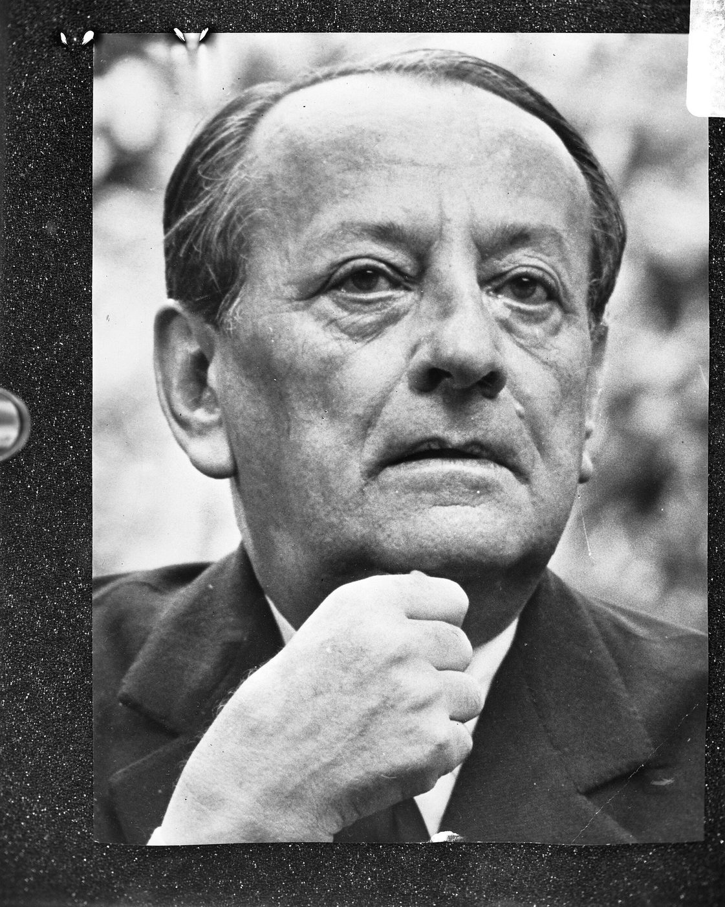
André Malraux (1901-1976), écrivain, puis ministre des Affaires culturelles. Photo : Anefo, Nationaal Archief (Pays-Bas), CC0, Wikimedia Commons. Voir la fiche.
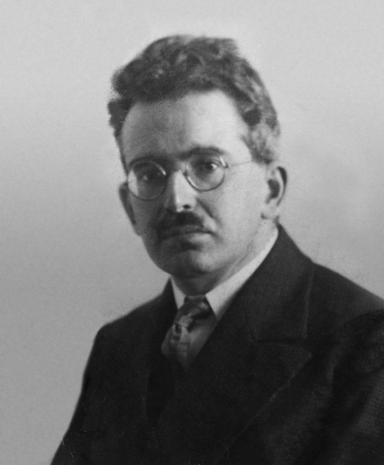
Walter Benjamin (1892-1940), vers 1928. Photographie anonyme, domaine public, Wikimedia Commons. Voir la fiche.
Le lien entre ces images. Deux hommes qui se croisent à Paris dans les années 1930 et font le même constat : la reproduction arrache l'œuvre à son lieu. L'exilé allemand y voit dépérir l'aura ; l'écrivain français, devenu ministre, y voit la résurrection de tout le passé.
Gombrich contre Malraux (1954)
Dans son compte rendu « André Malraux and the Crisis of Expressionism » (Burlington Magazine, 1954, repris dans Méditations sur un cheval de bois), Gombrich reproche à Malraux de projeter le goût moderne, expressionniste, sur tout le passé et de faire de l'art une religion de substitution. Il lui oppose une histoire rationnelle des problèmes techniques et des conventions : on ne lit pas un crucifix roman comme un Rouault.
Merleau-Ponty et Malraux (1952)
Dans « Le langage indirect et les voix du silence » (Signes, 1960), Merleau-Ponty reprend le titre de Malraux pour le critiquer. Il refuse l'idée d'un style né d'un artiste solitaire contre le monde. Le style naît de la perception et du corps du peintre ; il renvoie au film ralenti de Matisse en train de peindre.
Barthes (1980)
Il déplace la question. La photographie n'est plus le moyen de reproduire l'art, mais un objet à part : elle atteste que « ça a été ». Le punctum est une aura privée, qui ne tient ni au culte ni au musée mais à la blessure d'un regard singulier. Barthes répond indirectement à Benjamin (une forme d'unicité revient) et à Gombrich (le regard ne se réduit pas à la reconnaissance de conventions).
Chronologie à retenir
Date
Texte
Ce qu'il apporte au débat
1935 à 1939
Benjamin, « L'œuvre d'art à l'époque de sa reproductibilité technique »
Aura, culte et exposition
1936
Malraux, discours sur l'héritage culturel (Londres)
Le passé hérité doit être reconquis
1947 à 1951
Malraux, Le Musée imaginaire, puis Les Voix du silence
Musée imaginaire, métamorphose, anti-destin
1950
Gombrich, The Story of Art
Il n'y a que des artistes
1952
Merleau-Ponty, « Le langage indirect et les voix du silence »
Le style naît de la perception
1954
Gombrich, compte rendu de Malraux
Anachronisme et religion de l'art
1960
Gombrich, Art and Illusion
Schéma et correction, part du spectateur
1980
Barthes, La Chambre claire
Studium, punctum, ça-a-été
Tableau de synthèse à faire compléter par les élèves
Version vierge pour la séance 11 (elle figure aussi dans la fiche élève). Le corrigé suit.
Malraux
Gombrich
Benjamin
Barthes
Ce que fait la reproduction
Le statut de l'art
Le spectateur
Œuvre emblème
Corrigé du tableau
Malraux
Gombrich
Benjamin
Barthes
Ce que fait la reproduction
Elle crée le musée imaginaire et métamorphose les œuvres
Elle ne change pas le problème : voir reste interpréter
Elle détruit l'aura
La photo n'est pas une reproduction mais une trace du réel
Le statut de l'art
Un absolu, un « anti-destin »
Une histoire d'artistes et de savoir-faire
Un enjeu politique
Une affaire de désir et de deuil
Le spectateur
Un homme moderne qui confronte toutes les civilisations
Il complète l'image par ses attentes
Les masses, une réception distraite
Un sujet singulier, blessé
Œuvre emblème
Crucifix roman, Madone de Cimabue
Le Rhinocéros de Dürer (1515)
Les rues désertes photographiées par Atget
Portrait de Lewis Payne par Gardner (1865)
Merleau-Ponty n'a pas de colonne : il sert de troisième voix dans la querelle. Les élèves qui le souhaitent ajoutent une cinquième colonne (reproduction : elle ne montre pas le geste ; art : un style né de la perception ; spectateur : celui qui refait le geste du peintre ; œuvre : le film de Matisse au ralenti).
Séance 1. Que perd une image en entrant au Louvre ?
Durée : 52 minutes (séance de 55 minutes) · Objectif : comprendre, devant une œuvre précise, que le musée transforme la nature des objets qu'il montre.
Étape 1. Une question au tableau (5 min, minute 0 à 5)
Écrire au tableau : « Un crucifix est-il une sculpture ? » Chaque élève répond par écrit en une phrase, sur la page de garde de la séquence. On ne corrige pas : on garde ces phrases pour la fin de la séquence.
Étape 2. Entrée par l'œuvre : la Maestà de Cimabue (15 min, minute 5 à 20)
Projeter la Maestà en plein écran, sans rien dire, une minute. Puis donner son histoire : un grand retable peint vers 1280 pour l'église San Francesco de Pise, placé au-dessus d'un autel, vu à la lumière des cierges, devant lequel on priait. Saisi en 1813, il est au Louvre depuis.
Question : « Que perd et que gagne cette image au Louvre ? » Tour de table : chaque élève dit un mot, « elle perd… » ou « elle gagne… ». Le professeur note les mots en deux colonnes. On obtient en général : la prière, l'autel, la pénombre, l'or vibrant / la lumière, la comparaison, le cartel, le nom de l'artiste, l'histoire de l'art.
Étape 3. Première lecture de l'incipit de Malraux (20 min, minute 20 à 40)
Lire à voix haute les deux premières pages de la partie I (références dans le corpus). Les élèves suivent sur la photocopie de l'édition de la classe. Par deux, ils découpent le passage en quatre mouvements et donnent un titre à chacun.
« Un crucifix roman n'était pas d'abord une sculpture, la Madone de Cimabue n'était pas d'abord un tableau, même l'Athéna de Phidias n'était pas d'abord une statue. » André Malraux, Les Voix du silence, Gallimard, 1951, partie I, « Le Musée imaginaire », p. 11 ; Le Musée imaginaire, Folio essais, p. 11.
Étape 4. Mise en commun des quatre mouvements (7 min, minute 40 à 47)
Au tableau : (a) les œuvres avaient une fonction ; (b) le musée les arrache à cette fonction et les rend « tableaux » ; (c) le musée réel reste incomplet ; (d) la photographie ouvre un « musée imaginaire » sans limites.
Étape 5. Trace écrite et travail (5 min, minute 47 à 52)
Dicter la trace écrite, écrire le travail au tableau, montrer le premier bristol modèle (mode d'emploi).
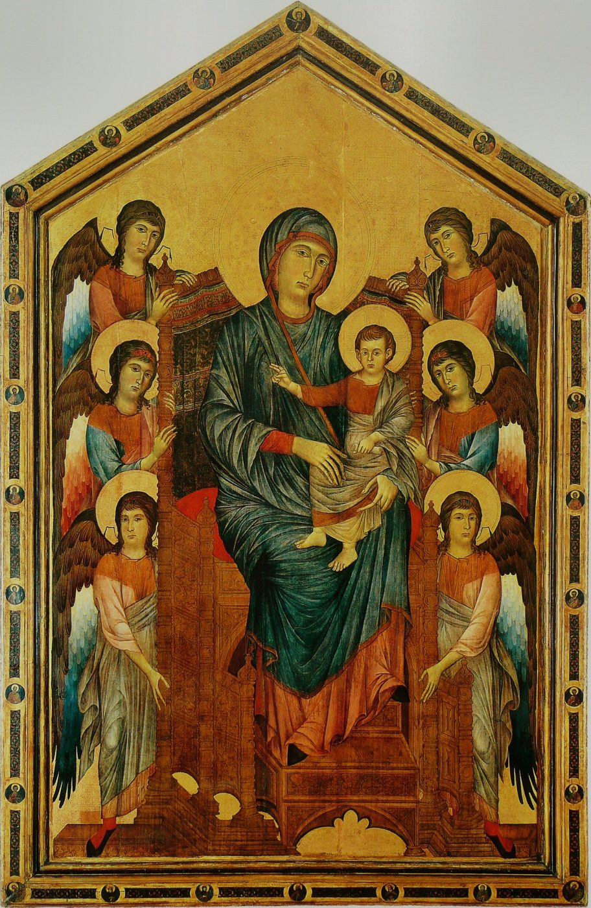
Cimabue, Maestà, vers 1280, tempera sur bois, 427 × 280 cm, musée du Louvre. Peinte pour l'église San Francesco de Pise, entrée au Louvre en 1813. C'est la « Madone de Cimabue » de la première phrase de Malraux : une image de dévotion devenue tableau. Domaine public, Wikimedia Commons. Voir la fiche.
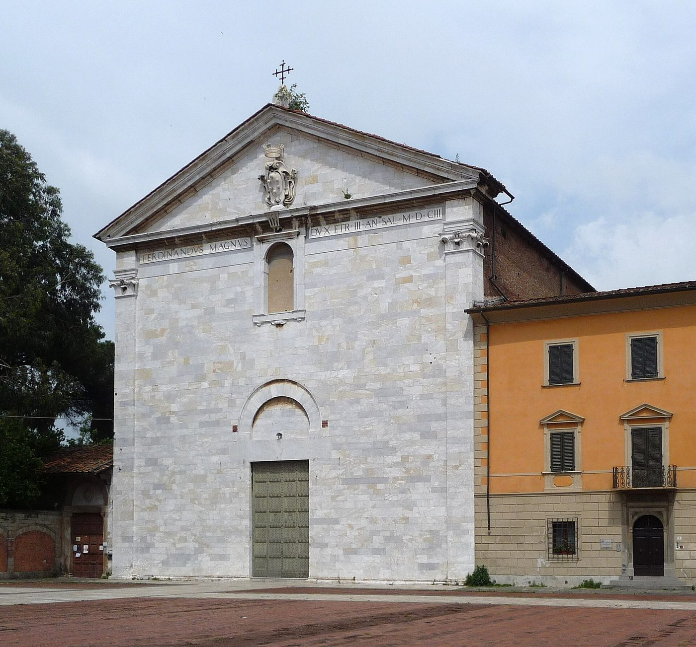
L'église San Francesco de Pise, pour laquelle la Maestà a été peinte vers 1280. Photo : Lucarelli, CC BY-SA 3.0, Wikimedia Commons. Voir la fiche.
Le lien entre ces images. Alors et maintenant : le même retable a d'abord été une image de prière au-dessus d'un autel de San Francesco de Pise ; il est aujourd'hui un tableau accroché dans une salle du Louvre. C'est le passage que Malraux appelle métamorphose.
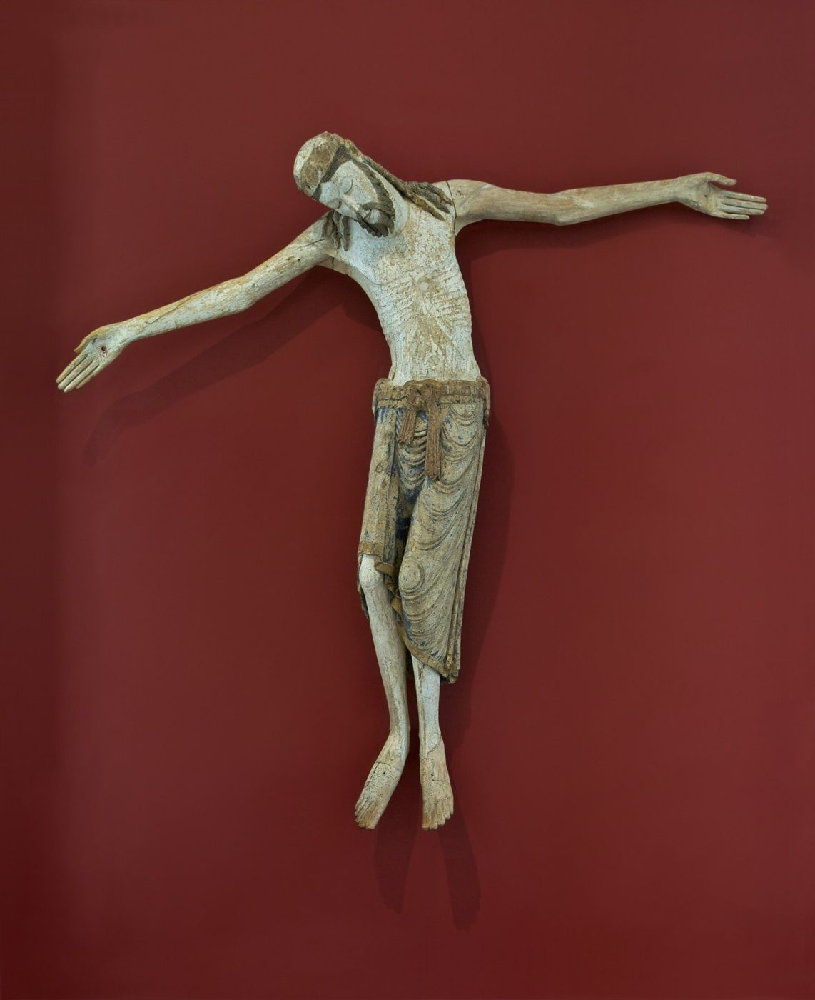
Christ Courajod, Bourgogne, deuxième quart du XIIe siècle, bois polychrome, musée du Louvre (RF 1082). Il appartenait à une Descente de croix d'église : un « crucifix roman », objet de prière avant d'être une sculpture. Photo : Jebulon, CC0, Wikimedia Commons. Voir la fiche.
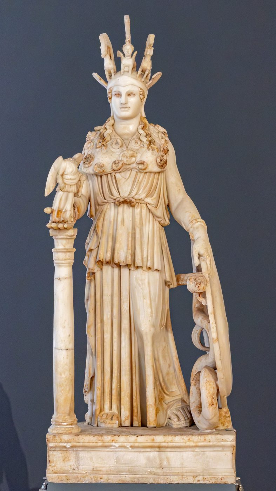
Athéna du Varvakeion, IIe ou IIIe siècle après J.-C., marbre, 105 cm, Musée national archéologique d'Athènes. Petite copie romaine de l'Athéna Parthénos de Phidias (438 avant J.-C.), statue de culte d'or et d'ivoire de 12 mètres aujourd'hui perdue. Photo : Nikos Kitsakis, CC BY 4.0, Wikimedia Commons. Voir la fiche.
Le lien entre ces images. Les deux autres objets de la première phrase de Malraux. Le Christ roman, séparé de sa croix et de son église, est devenu au Louvre une « sculpture ». De l'Athéna de Phidias, statue de culte en or et ivoire, il ne reste que des copies réduites : nous ne connaissons la déesse que comme une œuvre, et même comme une reproduction. Aucun de ces trois objets n'a été fait pour un musée.
Point d'arrêt. À la 40e minute, si les binômes n'ont pas fini le découpage du texte : on arrête la lecture, le professeur donne lui-même les quatre mouvements et l'on passe à l'issue de secours.
Issue de secours · 8 min. Si le temps manque à ce point d'arrêt, on condense en 8 minutes : on dicte la trace écrite courte ci-dessous ; tour de table : chaque élève dit un mot, ce que la Maestà perd ou gagne au Louvre, en version rapide, pour que chacun ait parlé au moins une fois ; le travail pour la séance suivante est écrit au tableau.
Trace écrite. Pour Malraux, une œuvre exposée au musée n'est plus ce qu'elle était d'abord. Le crucifix était un objet de prière, la Madone une image de dévotion, l'Athéna une déesse. Le musée les arrache à leur fonction et les fait entrer dans une même famille : l'art. C'est la métamorphose.
Participation. Chacun parle au moins une fois : tour de table : chaque élève dit un mot, ce que la Maestà perd ou gagne au Louvre.
Travail pour la séance suivante. Relire le passage et souligner les verbes qui disent ce que fait le musée. Fabriquer deux bristols : « Métamorphose » et « Cimabue, Maestà ».
Séance 2. Expliquer l'incipit : une archéologie de la fonction
Durée : 52 minutes (séance de 55 minutes) · Objectif : conduire une explication de texte de prépa sur l'incipit, de la problématique à la limite.
Étape 1. Reprise : un verbe chacun (7 min, minute 0 à 7)
Chaque élève lit un verbe souligné à la maison (isoler, confronter, arracher, réunir…). On les écrit au tableau : c'est déjà le lexique de l'explication.
Étape 2. La méthode de l'explication en prépa (10 min, minute 7 à 17)
Cinq temps : situer le passage ; lire ; poser une problématique ; suivre le mouvement en expliquant chaque procédé par son effet de sens ; conclure en ouvrant une limite. Rappel : en prépa, on n'explique pas pour paraphraser, on explique pour montrer comment le texte pense.
Étape 3. Construire ensemble les parties 1 et 2 (20 min, minute 17 à 37)
Problématique proposée : en montrant ce que le musée retire aux œuvres, Malraux ne fait-il pas l'éloge paradoxal d'une perte qui fonde l'art comme tel ?
1. Une archéologie de la fonction. L'anaphore « n'était pas d'abord » et la gradation (roman, Cimabue, Phidias) remontent du Moyen Âge à l'Antiquité. Le mot « d'abord » est essentiel : l'œuvre n'a pas perdu sa nature, elle en a acquis une seconde. Le crucifix était objet de prière ; l'Athéna, une déesse.
2. Le musée comme opération. Le musée « isole » et « confronte ». Il transforme des objets hétérogènes en membres d'une même famille, l'art. La rupture est donc aussi une continuité : le passé survit, mais métamorphosé.
Étape 4. Partie 3 et limite, par deux (10 min, minute 37 à 47)
3. Vers le musée imaginaire. La photographie achève le mouvement. Elle rend comparable ce qu'aucun musée ne peut réunir (fresques, vitraux, statues colossales). Mais elle uniformise les échelles et les matières : c'est le point que Gombrich et Benjamin attaqueront.
Par deux, les élèves formulent la limite en une phrase. Attendu : Malraux parle du point de vue de l'homme moderne cultivé ; il suppose que cette métamorphose est un gain pour l'humanité entière.
Étape 5. Trace écrite et travail (5 min, minute 47 à 52)
Dicter le plan, écrire le travail au tableau.
Point d'arrêt. À la 37e minute, si la partie 2 n'est pas terminée : le professeur dicte la partie 3 et la limite, puis issue de secours.
Issue de secours · 8 min. Si le temps manque à ce point d'arrêt, on condense en 8 minutes : on dicte la trace écrite courte ci-dessous ; chaque élève lit à voix haute un verbe relevé dans le texte, en version rapide, pour que chacun ait parlé au moins une fois ; le travail pour la séance suivante est écrit au tableau.
Trace écrite. Problématique : en montrant ce que le musée retire aux œuvres, Malraux fait l'éloge paradoxal d'une perte qui fonde l'art. 1. Une archéologie de la fonction (« n'était pas d'abord »). 2. Le musée isole et confronte : il crée la famille « art ». 3. La photographie achève le mouvement, mais uniformise échelles et matières.
Participation. Chacun parle au moins une fois : chaque élève lit à voix haute un verbe relevé dans le texte.
Travail pour la séance suivante. Rédiger l'introduction de l'explication (dix lignes : situation, thèse, problématique, annonce du mouvement). Fabriquer le bristol « Musée imaginaire ».
Séance 3. Les arts fictifs : ce que la photographie fabrique
Durée : 52 minutes (séance de 55 minutes) · Objectif : voir, sur des exemples, que la reproduction ne se contente pas de diffuser l'art : elle crée des œuvres et des rapprochements.
Étape 1. Reprise : trois introductions (6 min, minute 0 à 6)
Trois élèves lisent leur introduction. Les autres notent une qualité et un manque. Le professeur rappelle l'ordre attendu : situation, thèse, problématique, mouvement.
Étape 2. Le statère agrandi (14 min, minute 6 à 20)
Faire passer, ou montrer à sa vraie taille sur l'écran, une pièce de deux centimètres. Puis projeter le statère de Vercingétorix en plein écran. Écriture flash (3 lignes) : « Est-ce encore la même œuvre ? » Malraux montre, dans la partie I, comment le cadrage, l'agrandissement et l'éclairage photographique créent des œuvres qui n'existent pas : ce sont les « arts fictifs ».
Étape 3. Le musée imaginaire en acte : rapprocher l'impossible (14 min, minute 20 à 34)
Projeter côte à côte la voûte de la Sixtine et la tête de Jayavarman VII. Aucun musée ne les réunira jamais ; un livre le fait en deux pages. Puis projeter Cimabue à côté de Giotto : la confrontation fait apparaître un style (le corps qui prend du poids, le trône qui s'ouvre en profondeur). C'est ce que Malraux appelle voir par comparaison.
Étape 4. Exercice : deux définitions, deux œuvres (10 min, minute 34 à 44)
Définir en deux phrases « musée imaginaire » et « métamorphose », chacune avec une œuvre précise vue en classe. Correction : voir les concepts.
Étape 5. Trace écrite, bristols et travail (8 min, minute 44 à 52)
Dicter, puis laisser fabriquer deux bristols en classe.
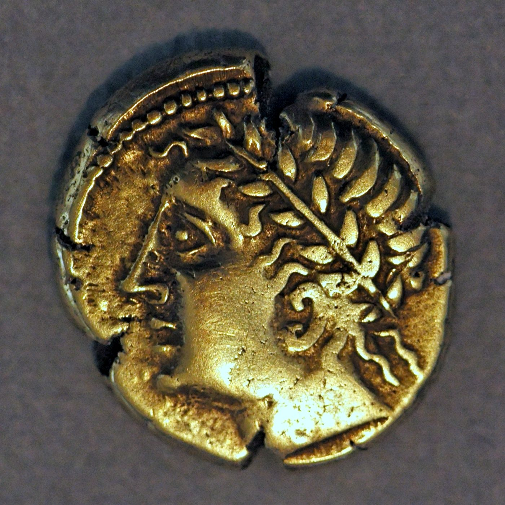
Statère d'or arverne au nom de Vercingétorix, vers 52 avant J.-C., Cabinet des médailles, Bibliothèque nationale de France. La pièce mesure environ 2 cm. Agrandie sur l'écran, elle devient une sculpture monumentale : c'est ce que Malraux appelle un « art fictif ». Photo : Marie-Lan Nguyen, domaine public, Wikimedia Commons. Voir la fiche.
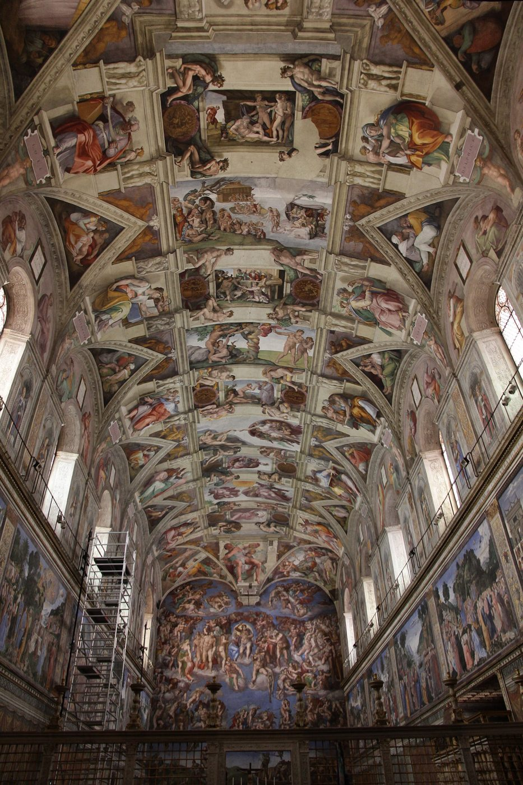
Michel-Ange, voûte de la chapelle Sixtine, 1508 à 1512, fresque, Vatican. Aucun musée ne peut l'accrocher. Photo : Jörg Bittner Unna, CC BY 3.0, Wikimedia Commons. Voir la fiche.
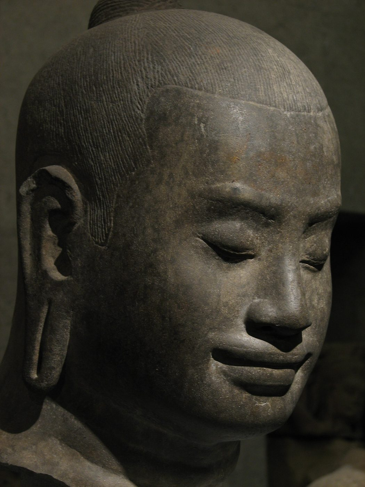
Tête présumée du roi Jayavarman VII, Angkor, style du Bayon, fin du XIIe siècle, grès, 42 cm, musée Guimet, Paris. Photo : Vladimir Renard, CC BY-SA 2.5, Wikimedia Commons. Voir la fiche.
Le lien entre ces images. Le musée imaginaire en deux images : une voûte peinte à Rome et une tête de grès d'Angkor, que seule la reproduction peut mettre côte à côte sur la même page.
Cimabue, Maestà, vers 1280, tempera sur bois, 427 × 280 cm, musée du Louvre. Peinte pour l'église San Francesco de Pise, entrée au Louvre en 1813. C'est la « Madone de Cimabue » de la première phrase de Malraux : une image de dévotion devenue tableau. Domaine public, Wikimedia Commons. Voir la fiche.
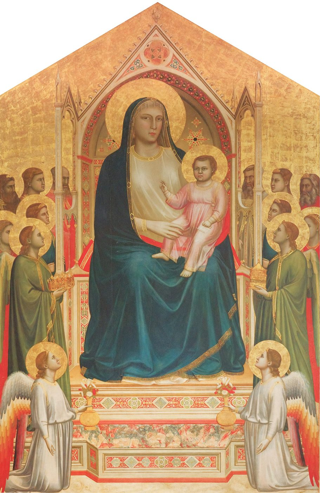
Giotto, Maestà d'Ognissanti, vers 1306 à 1310, tempera sur bois, Galerie des Offices, Florence. Domaine public, Wikimedia Commons. Voir la fiche.
Le lien entre ces images. Cimabue (vers 1280) et Giotto (vers 1306 à 1310), le même sujet à une génération d'écart. C'est en les comparant qu'on voit le style : chez Giotto, le corps de la Vierge pèse et le trône s'ouvre en profondeur. Malraux et Gombrich s'accordent sur ce point : on voit par comparaison.
Point d'arrêt. À la 34e minute, si la comparaison Cimabue et Giotto n'a pas été faite : on la garde pour la reprise de la séance 4 et l'on passe à l'issue de secours.
Issue de secours · 8 min. Si le temps manque à ce point d'arrêt, on condense en 8 minutes : on dicte la trace écrite courte ci-dessous ; chaque élève lit une phrase de son écriture flash : « même œuvre » ou « autre œuvre », avec une raison, en version rapide, pour que chacun ait parlé au moins une fois ; le travail pour la séance suivante est écrit au tableau.
Trace écrite. Le musée imaginaire est l'ensemble des œuvres de toutes les civilisations rendues disponibles par la photographie. Il permet de comparer ce qu'aucun musée ne réunit (la Sixtine et une tête khmère). Mais la photographie fabrique aussi des « arts fictifs » : un détail agrandi devient une œuvre nouvelle.
Participation. Chacun parle au moins une fois : chaque élève lit une phrase de son écriture flash : « même œuvre » ou « autre œuvre », avec une raison.
Travail pour la séance suivante. Lire l'introduction de l'Histoire de l'art de Gombrich (« De l'art et des artistes ») et noter une phrase qui contredit Malraux. Regarder le Jardin de Nebamoun : que montre le peintre égyptien, ce qu'il voit ou ce qu'il sait ? Bristols : « Arts fictifs » et « Statère de Vercingétorix ».
Séance 4. Gombrich : il n'y a que des artistes
Durée : 52 minutes (séance de 55 minutes) · Objectif : comprendre la notion de schéma et correction, sur le Rhinocéros de Dürer.
Étape 1. Entrée : d'accord ou pas d'accord ? (7 min, minute 0 à 7)
« “l'Art” n'a pas d'existence propre. Il n'y a que des artistes. » Ernst Gombrich, Histoire de l'art, Phaidon, Introduction, « De l'art et des artistes », première phrase.
Chaque élève dit « d'accord » ou « pas d'accord » et ajoute une raison en quelques mots. On remarque que Gombrich vise exactement ce que Malraux célèbre : l'Art avec un grand A.
Étape 2. Le Rhinocéros de Dürer face à un vrai rhinocéros (15 min, minute 7 à 22)
Projeter les deux images. Les élèves relèvent par écrit ce qui est faux chez Dürer : armure à plaques, rivets, écailles sur les pattes, petite corne dorsale. Dürer grave un animal qu'il n'a jamais vu, d'après une description et un croquis. Les manuels de zoologie reprennent ce schéma pendant plus de deux siècles.
Notion : schéma et correction. L'artiste part d'un schéma hérité (ici, l'animal cuirassé), puis le corrige au contact du réel, quand il le peut. Formule de Gombrich : « making comes before matching » (fabriquer précède comparer).
Étape 3. Lecture : « Vérité et stéréotype » (15 min, minute 22 à 37)
Lire le passage du chapitre II de L'Art et l'Illusion consacré au rhinocéros et au Derwentwater de Chiang Yee (références dans le corpus). En 1936, Chiang Yee, peintre chinois installé en Angleterre, peint le lac anglais avec le vocabulaire de la peinture chinoise : les collines deviennent des montagnes à l'encre, les arbres des touches calligraphiées. Le style est un ensemble de conventions, non une vision pure. (L'œuvre de Chiang Yee est protégée : la montrer depuis le livre.)
Étape 4. Exercice : retrouver le schéma (10 min, minute 37 à 47)
Sur la Maestà de Cimabue, repérer trois éléments qui viennent d'un schéma hérité et non de l'observation (le fond d'or, les anges superposés sans profondeur, les plis en lignes d'or de l'icône byzantine). Corrigé : le fond d'or vient de l'icône et signifie le ciel ; les anges sont étagés comme des signes ; la chrysographie des plis est une formule d'atelier.
Étape 5. Trace écrite et travail (5 min, minute 47 à 52)
Dicter, écrire le travail au tableau.
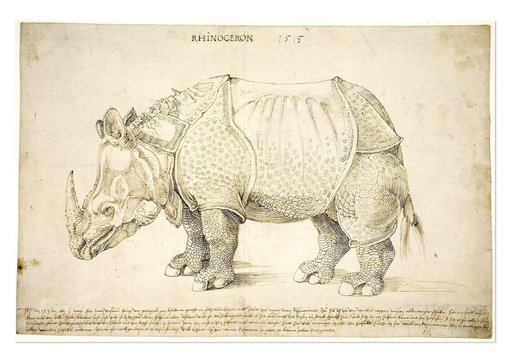
Albrecht Dürer, Rhinocéros, 1515, dessin préparatoire à la plume et à l'encre brune, British Museum. British Museum, domaine public, Wikimedia Commons. Voir la fiche.
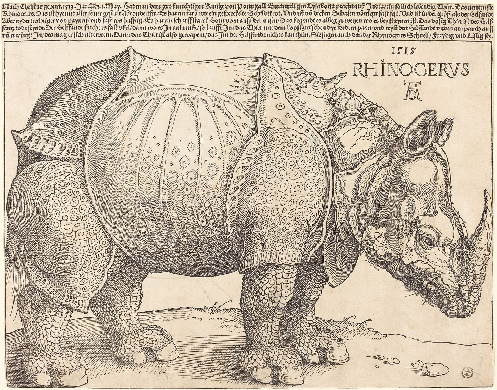
Albrecht Dürer, Le Rhinocéros, 1515, gravure sur bois, National Gallery of Art, Washington. Dürer n'a jamais vu l'animal : il travaille d'après une lettre et un croquis venus de Lisbonne. Domaine public (CC0, National Gallery of Art), Wikimedia Commons. Voir la fiche.Rhinocéros indien (Rhinoceros unicornis). C'est l'espèce de l'animal arrivé à Lisbonne en 1515. Photo : Charles J. Sharp, CC BY-SA 4.0, Wikimedia Commons. Voir la fiche.
Le lien entre ces images. Le schéma et la correction en trois images. Le dessin préparatoire, puis la gravure diffusée à des milliers d'exemplaires : entre les deux, le schéma se fixe, et les manuels de zoologie le reprennent pendant plus de deux siècles. À côté, ce qu'on voit quand on regarde un vrai rhinocéros : tout ce qui sépare les images de Dürer de la photographie est la part du schéma hérité.
Point d'arrêt. À la 37e minute, si la lecture du chapitre II n'est pas finie : on la termine à la maison et on passe à l'issue de secours.
Issue de secours · 8 min. Si le temps manque à ce point d'arrêt, on condense en 8 minutes : on dicte la trace écrite courte ci-dessous ; chaque élève dit « d'accord » ou « pas d'accord » avec la première phrase de Gombrich, avec une raison, en version rapide, pour que chacun ait parlé au moins une fois ; le travail pour la séance suivante est écrit au tableau.
Trace écrite. Pour Gombrich, l'Art avec un grand A n'existe pas : il n'y a que des artistes qui résolvent des problèmes. L'artiste part d'un schéma hérité, puis le corrige au contact du réel (schéma et correction). Exemple : le Rhinocéros de Dürer (1515), cuirassé comme une armure, copié pendant deux siècles.
Participation. Chacun parle au moins une fois : chaque élève dit « d'accord » ou « pas d'accord » avec la première phrase de Gombrich, avec une raison.
Travail pour la séance suivante. Finir la lecture de « Vérité et stéréotype ». Bristols : « Schéma et correction » et « Dürer, Rhinocéros, 1515 ».
Séance 5. Voir, c'est interpréter : la part du spectateur
Durée : 52 minutes (séance de 55 minutes) · Objectif : comprendre que le regard complète l'image, et repérer des conventions dans un paysage qui paraît naturel.
Étape 1. Reprise : les bristols par deux (6 min, minute 0 à 6)
Par deux, A montre le recto de deux cartes, B répond ; puis on inverse.
Étape 2. Le canard-lapin (10 min, minute 6 à 16)
Projeter la figure. Chaque élève dit ce qu'il a vu en premier. On essaie de voir les deux à la fois : impossible. La vision interprète. Notion : la part du spectateur (partie III de L'Art et l'Illusion). Le regardeur complète l'image par ses attentes et sa culture.
Étape 3. Monet : des taches qui deviennent des bateaux (12 min, minute 16 à 28)
Projeter Impression, soleil levant de très près (un détail), puis en entier. Les touches ne deviennent barque, mâts, grues que grâce à nous. Le titre lui-même donne une consigne au regard.
Étape 4. Exercice : où sont les conventions chez Constable ? (16 min, minute 28 à 44)
Sur Wivenhoe Park (1816), par deux, remplir une grille : cadrage, ligne d'horizon, lumière, place des personnages et des animaux, ciel. Puis comparer avec la photographie du même parc aujourd'hui : où sont les conventions de la photographie ? Corrigé : le format très large est celui du panorama ; le lac éclairé guide l'œil vers la maison du commanditaire ; vaches, cygnes et barque animent chaque plan comme dans un tableau hollandais ; le ciel est composé, ses nuages ont été étudiés à part ; l'herbe est d'un vert que la photographie n'aurait pas. Constable, peintre du « naturel », obéit à des conventions comme tout le monde : c'est la thèse de Gombrich.
Étape 5. Lien avec « L'atelier », trace écrite et travail (8 min, minute 44 à 52)
Pour Gombrich, l'artiste apprend dans l'atelier des formules et des schémas avant d'apprendre à voir. Malraux dit de son côté que le peintre naît des tableaux et non de la nature. Les deux se rejoignent : on devient artiste à partir des œuvres. Ils divergent sur la suite : progrès technique et correction chez Gombrich, conquête d'un style et rupture chez Malraux. Former les deux groupes du débat.
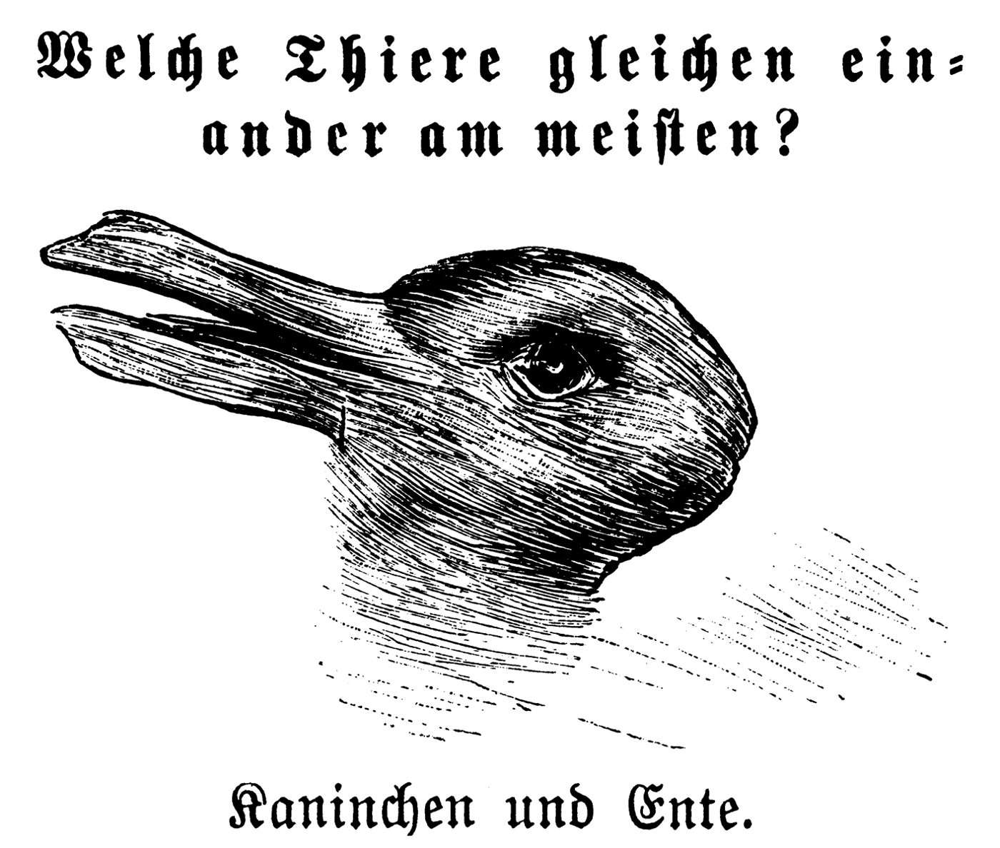
« Kaninchen und Ente » (« Lapin et canard »), Fliegende Blätter, Munich, 23 octobre 1892. Gombrich ouvre L'Art et l'Illusion sur cette figure : on voit le canard ou le lapin, jamais les deux à la fois. Domaine public, Wikimedia Commons. Voir la fiche.
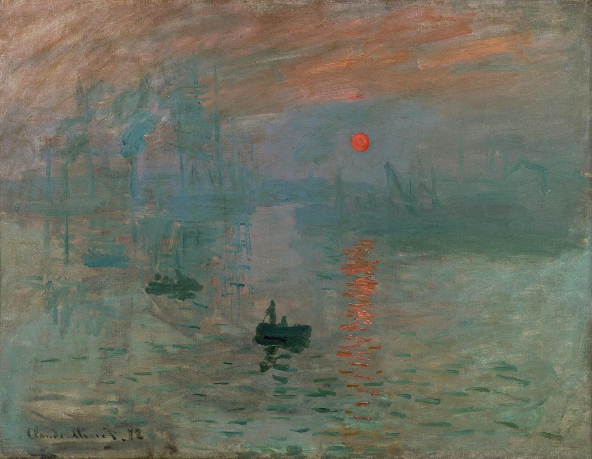
Claude Monet, Impression, soleil levant, 1872, huile sur toile, 48 × 63 cm, musée Marmottan Monet, Paris. De près, des taches ; à distance, une barque, des mâts, des grues : c'est le spectateur qui fait le reste. Domaine public, Wikimedia Commons. Voir la fiche.
Le lien entre ces images. Deux images qui demandent au spectateur de finir le travail. Le canard-lapin oblige à choisir une lecture ; chez Monet, quelques touches deviennent un port parce que nous savons ce qu'est un port.
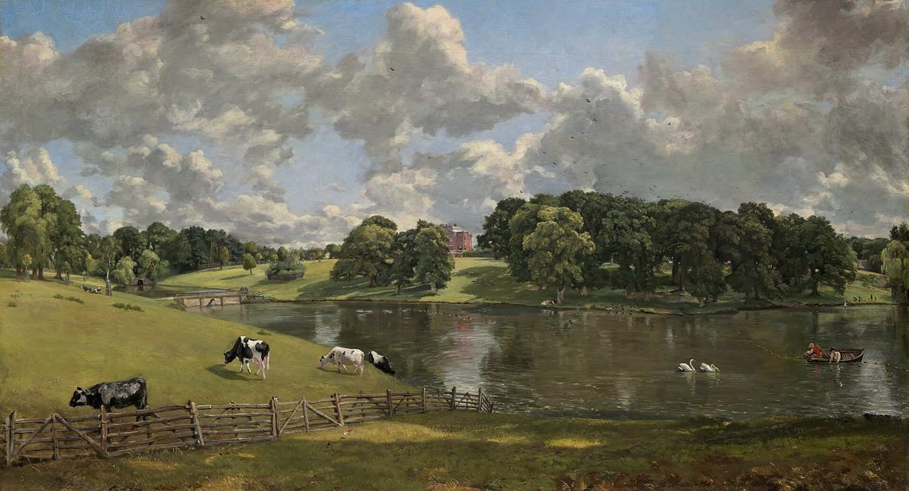
John Constable, Wivenhoe Park, Essex, 1816, huile sur toile, 56 × 101 cm, National Gallery of Art, Washington. Domaine public (CC0, National Gallery of Art), Wikimedia Commons. Voir la fiche.
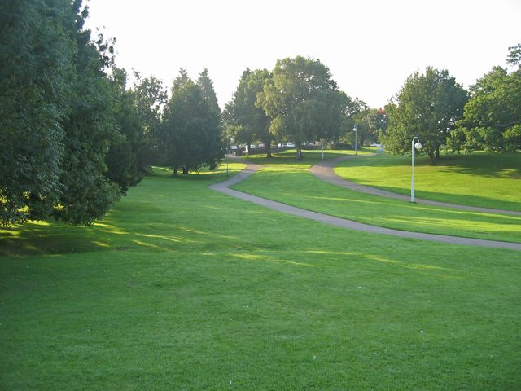
Wivenhoe Park aujourd'hui, devenu le campus de l'université d'Essex. Photo : John Allan, CC BY-SA 2.0, Wikimedia Commons (geograph.org.uk). Voir la fiche.
Le lien entre ces images. Le même parc, peint en 1816 et photographié aujourd'hui. La comparaison fait apparaître ce que le peintre a ajouté, choisi ou arrangé ; elle montre aussi que la photographie a ses propres conventions (cadrage, saison, heure, objectif).
Point d'arrêt. À la 28e minute, si l'exercice Constable ne peut pas tenir en entier : on le fait oralement en cinq minutes, puis issue de secours.
Issue de secours · 8 min. Si le temps manque à ce point d'arrêt, on condense en 8 minutes : on dicte la trace écrite courte ci-dessous ; chaque élève dit ce qu'il a vu en premier : le canard ou le lapin, en version rapide, pour que chacun ait parlé au moins une fois ; le travail pour la séance suivante est écrit au tableau.
Trace écrite. Voir, c'est interpréter : devant le canard-lapin, on ne voit jamais les deux figures à la fois. Le spectateur complète l'image par ses attentes et sa culture (la part du spectateur). Même un paysage « naturel » comme celui de Constable est fait de conventions.
Participation. Chacun parle au moins une fois : chaque élève dit ce qu'il a vu en premier : le canard ou le lapin.
Travail pour la séance suivante. Groupe Malraux : lire les dernières pages des Voix du silence (partie IV, p. 637 à 640). Groupe Gombrich : lire les extraits traduits du compte rendu de 1954 distribués par le professeur. Bristols : « Part du spectateur » et « Canard-lapin ».
Séance 6. La querelle (1) : préparer les arguments
Durée : 52 minutes (séance de 55 minutes) · Objectif : construire en groupe des arguments appuyés sur une œuvre et une citation, et anticiper l'objection.
Étape 1. Mise en place (5 min, minute 0 à 5)
Deux groupes : Malraux et Gombrich. Dans chaque groupe, des rôles : un rapporteur, un gardien du temps, un responsable des citations, un responsable des objections.
Étape 2. Travail en groupe (20 min, minute 5 à 25)
Chaque groupe prépare trois arguments. Pour chacun : une œuvre précise, une citation courte avec sa référence, l'objection que l'autre groupe fera, et la réponse.
Les reproches de Gombrich (pistes pour son groupe)
Anachronisme : Malraux lit tout le passé avec le goût du XXe siècle, celui de l'expressionnisme et des arts primitifs.
Mysticisme : l'art devient une religion et une « monnaie de l'absolu ». Gombrich y voit un discours lyrique, sans preuve.
Oubli des fonctions et des techniques : un style répond à des problèmes précis. Ce n'est pas un défi lancé au destin. On ne lit pas un crucifix roman comme un Rouault.
Ce qu'on peut répondre pour Malraux (pistes pour son groupe)
Il ne prétend pas restituer le sens d'origine : il décrit justement la métamorphose et la reconnaît comme telle.
Il pose une question que Gombrich laisse de côté : pourquoi les œuvres de civilisations mortes nous parlent-elles encore ?
Étape 3. La troisième voix : Merleau-Ponty (15 min, minute 25 à 40)
Exposé du professeur. Dans « Le langage indirect et les voix du silence » (Signes, Gallimard, 1960, p. 49 à 104), Merleau-Ponty reprend le titre de Malraux pour le critiquer. Il refuse l'idée d'un style né d'un artiste solitaire contre le monde. Le style se forme dans la perception du peintre, dans le geste même : d'où son analyse du film qui montre Matisse au ralenti, hésitant devant la toile. Chaque groupe décide : Merleau-Ponty nous aide-t-il ou nous gêne-t-il ?
Étape 4. Tour de table : une phrase d'argument chacun (7 min, minute 40 à 47)
Chaque élève dit une phrase d'argument de son groupe, à voix haute. On vérifie que chacun a sa phrase pour le débat.
Étape 5. Trace écrite et travail (5 min, minute 47 à 52)
Dicter, écrire le travail au tableau.
Point d'arrêt. À la 40e minute, si la présentation de Merleau-Ponty a débordé : on supprime le tour de table de 7 minutes et on prend l'issue de secours, qui le garde en version courte.
Issue de secours · 8 min. Si le temps manque à ce point d'arrêt, on condense en 8 minutes : on dicte la trace écrite courte ci-dessous ; tour de table : chaque élève dit à voix haute une phrase d'argument de son groupe, en version rapide, pour que chacun ait parlé au moins une fois ; le travail pour la séance suivante est écrit au tableau.
Trace écrite. La querelle : Gombrich reproche à Malraux l'anachronisme, le mysticisme et l'oubli des techniques. Malraux répond qu'il décrit la métamorphose et demande pourquoi les œuvres mortes nous parlent encore. Merleau-Ponty : le style naît de la perception et du geste du peintre.
Participation. Chacun parle au moins une fois : tour de table : chaque élève dit à voix haute une phrase d'argument de son groupe.
Travail pour la séance suivante. Apprendre son argument, sa citation et sa réponse à l'objection. Bristols : « Querelle Gombrich et Malraux (1954) » et « Merleau-Ponty, Signes ».
Séance 7. La querelle (2) : le débat
Durée : 52 minutes (séance de 55 minutes) · Objectif : débattre en s'appuyant sur des œuvres, puis formuler la question de fond.
Étape 1. Règles du débat (3 min, minute 0 à 3)
Chaque élève a un jeton. Personne ne parle une deuxième fois tant que tous n'ont pas posé leur jeton. On répond à l'argument précédent avant d'en avancer un nouveau.
Étape 2. Le débat en trois manches (24 min, minute 3 à 27)
Trois manches de huit minutes : (1) le passé est-il lu avec nos yeux ? (2) l'art est-il un absolu ou un savoir-faire ? (3) pourquoi allons-nous au musée ? Dans chaque manche, trois minutes par groupe, puis deux minutes de répliques. Le gardien du temps tient le minuteur.
Étape 3. La troisième voix (10 min, minute 27 à 37)
Trois élèves, désignés à l'avance, interviennent au nom de Merleau-Ponty : ils montrent ce que les deux groupes ont oublié, le geste du peintre et la perception.
Étape 4. Bilan : la question de fond (10 min, minute 37 à 47)
Le professeur fait dégager la question de fond et dicte la trace écrite.
Étape 5. Travail (5 min, minute 47 à 52)
Écrire le travail au tableau.
Point d'arrêt. À la 35e minute, si la troisième manche n'a pas eu lieu : on la supprime, on donne la parole à ceux qui n'ont pas posé leur jeton, et l'on passe à l'issue de secours.
Issue de secours · 8 min. Si le temps manque à ce point d'arrêt, on condense en 8 minutes : on dicte la trace écrite courte ci-dessous ; le débat lui-même : chaque élève pose son jeton, donc parle au moins une fois, en version rapide, pour que chacun ait parlé au moins une fois ; le travail pour la séance suivante est écrit au tableau.
Trace écrite. La querelle oppose deux histoires de l'art : une histoire des solutions techniques (Gombrich) et une histoire des significations humaines (Malraux). Une bonne copie de prépa ne choisit pas trop vite. Elle montre que chacune a besoin de l'autre : sans savoir technique, la métamorphose devient vague ; sans question du sens, l'histoire technique n'explique pas pourquoi nous allons au musée.
Participation. Chacun parle au moins une fois : le débat lui-même : chaque élève pose son jeton, donc parle au moins une fois.
Travail pour la séance suivante. Rédiger un paragraphe de quinze lignes : « Gombrich a-t-il raison contre Malraux ? » Lire dans l'essai de Benjamin les sections II à VI (dernière version). Bristol : « Anachronisme ».
Séance 8. Benjamin (1) : l'aura, le culte et l'exposition
Durée : 52 minutes (séance de 55 minutes) · Objectif : définir l'aura, valeur cultuelle et valeur d'exposition, et les appliquer à des œuvres.
Étape 1. Entrée : pourquoi faire la queue devant la Joconde ? (7 min, minute 0 à 7)
Projeter la Joconde. Chaque élève donne une raison d'aller voir l'original alors qu'on connaît l'image par cœur.
Étape 2. Lecture : authenticité et aura (18 min, minute 7 à 25)
L'aura : « une singulière trame d'espace et de temps : l'unique apparition d'un lointain, si proche soit-il ». Walter Benjamin, « L'œuvre d'art à l'époque de sa reproductibilité technique », dernière version (1939), trad. M. de Gandillac, R. Rochlitz, P. Rusch, Œuvres III, Gallimard, Folio essais, 2000, p. 269 à 316.
L'original a un « ici et maintenant ». La reproduction le multiplie et le rapproche : elle supprime cette distance. Lire l'exemple de la chaîne de montagnes à l'horizon, un après-midi d'été : l'aura n'est pas une qualité de l'objet, c'est une distance vécue.
Étape 3. Valeur cultuelle et valeur d'exposition (15 min, minute 25 à 40)
Certaines statues de cathédrale sont invisibles depuis le sol ; certaines madones restent voilées une partie de l'année. Leur valeur tient à leur présence, pas au fait d'être vues. Le musée, puis la photo, font passer au premier plan l'exposition. Projeter les rois de Reims et la Madone Sixtine.
Étape 4. Exercice : l'axe du culte à l'exposition (7 min, minute 40 à 47)
Placer six œuvres de la séquence sur un axe, du culte à l'exposition, et justifier en une phrase : tympan de Moissac, Christ Courajod, Maestà de Cimabue, Madone Sixtine, Joconde, statère agrandi. Corrigé : Moissac (encore en place, on entre à l'église), Christ Courajod (objet de culte au musée), Maestà (retable devenu tableau), Madone Sixtine (vendue pour une galerie dès 1754), Joconde (exposition pure, image mondiale), statère agrandi (n'existe que par l'exposition photographique).
Étape 5. Trace écrite et travail (5 min, minute 47 à 52)
Dicter, écrire le travail au tableau.
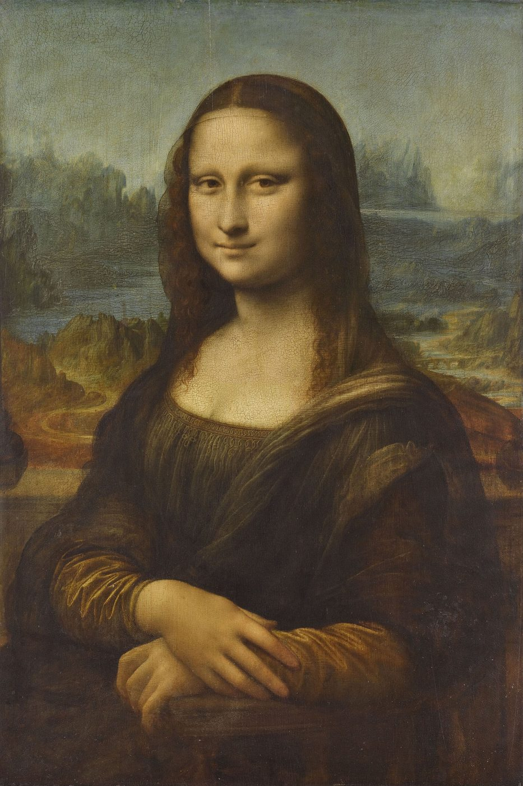
Léonard de Vinci, La Joconde, vers 1503 à 1519, huile sur bois, 77 × 53 cm, musée du Louvre. L'image la plus reproduite au monde, et pourtant des millions de visiteurs font la queue pour l'original. Domaine public, Wikimedia Commons. Voir la fiche.
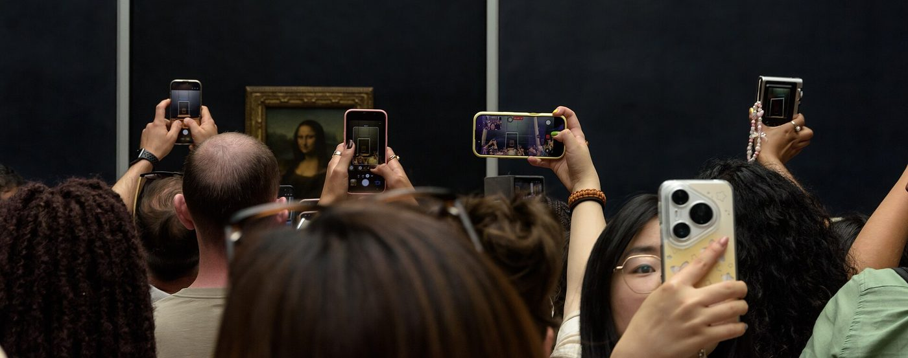
Visiteurs photographiant La Joconde au-dessus des têtes, musée du Louvre. Photo : Julian Lupyan, CC0, Wikimedia Commons. Voir la fiche.
Le lien entre ces images. L'original et sa réception. Le tableau le plus reproduit du monde attire une foule qui vient voir l'original… pour le photographier. L'aura a-t-elle disparu, ou la reproduction l'a-t-elle renforcée ?
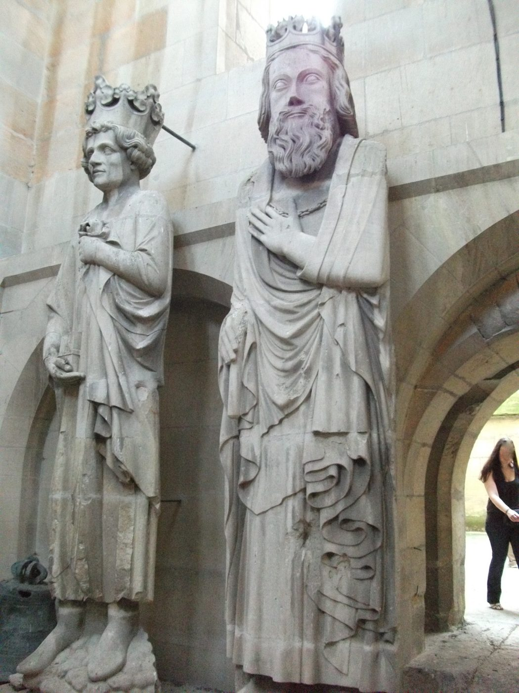
Deux rois de la galerie des rois de la cathédrale de Reims, fin du Moyen Âge, déposés dans la tour nord. Sculptés pour le sommet de la façade, où l'œil ne distingue presque rien, on les regarde aujourd'hui les yeux dans les yeux. Photo : Gérald Garitan, CC BY-SA 3.0, Wikimedia Commons. Voir la fiche.
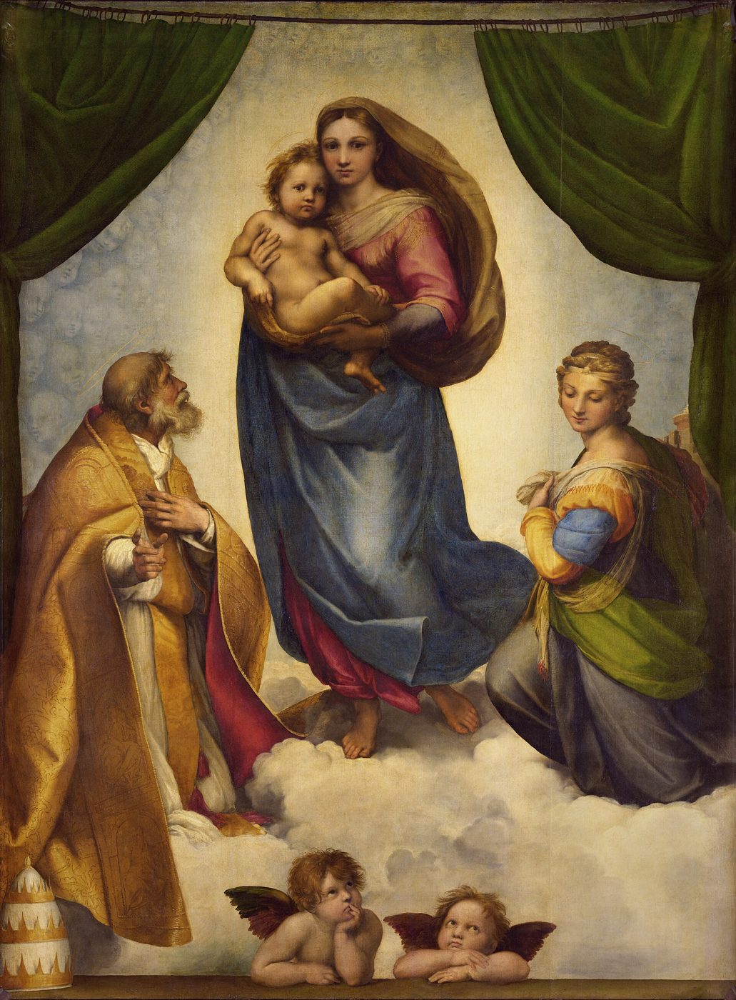
Raphaël, La Madone Sixtine, 1512 à 1513, huile sur toile, 265 × 196 cm, Gemäldegalerie Alte Meister, Dresde. Peinte pour le maître-autel de San Sisto à Plaisance, vendue en 1754 à l'électeur de Saxe : du culte à la galerie. Benjamin lui consacre une note de son essai. Domaine public, Wikimedia Commons. Voir la fiche.
Le lien entre ces images. Du culte à l'exposition. Les rois de Reims étaient faits pour le haut de la façade, presque hors de vue ; la Madone Sixtine, pour un autel. Les uns et l'autre sont aujourd'hui regardés de face, à hauteur d'œil.
Point d'arrêt. À la 40e minute, si l'exercice de l'axe n'est pas fait : on le donne à faire à la maison et l'on passe à l'issue de secours.
Issue de secours · 8 min. Si le temps manque à ce point d'arrêt, on condense en 8 minutes : on dicte la trace écrite courte ci-dessous ; chaque élève donne une raison d'aller voir l'original de la Joconde, en version rapide, pour que chacun ait parlé au moins une fois ; le travail pour la séance suivante est écrit au tableau.
Trace écrite. L'aura est l'unicité de l'œuvre liée à sa présence, « l'unique apparition d'un lointain, si proche soit-il » (Benjamin). La reproduction la fait dépérir. La valeur cultuelle tient à l'existence de l'œuvre dans un rite ; la valeur d'exposition, au fait qu'elle est montrée. Le musée et la photographie font passer de l'une à l'autre.
Participation. Chacun parle au moins une fois : chaque élève donne une raison d'aller voir l'original de la Joconde.
Travail pour la séance suivante. Placer les six œuvres sur l'axe si ce n'est pas fait. Bristols : « Aura » et « Valeur cultuelle et valeur d'exposition ».
Séance 9. Benjamin (2) : Atget, et Malraux face à Benjamin
Durée : 52 minutes (séance de 55 minutes) · Objectif : comparer deux lectures opposées de la reproduction et rédiger un paragraphe argumenté.
Étape 1. Reprise : les bristols par deux (6 min, minute 0 à 6)
A montre le recto, B répond ; deux cartes chacun.
Étape 2. Atget, rue des Ursins (12 min, minute 6 à 18)
Décrire la photographie : la rue vide, la charrette abandonnée, la colonne d'affiches. Benjamin compare ces rues désertes, vers 1900, au lieu d'un crime qu'on photographie pour l'enquête : la photographie devient une pièce à conviction. Elle appelle une légende, un mode d'emploi. La valeur d'exposition l'emporte.
Étape 3. Même constat, conclusion opposée (14 min, minute 18 à 32)
Relire l'incipit de Malraux (séance 1). Même constat : la reproduction arrache l'œuvre à son lieu. Conclusion opposée : Benjamin parle d'un dépérissement, Malraux d'une résurrection. Les deux hommes se croisent à Paris dans les années 1930 ; Benjamin lit et commente Malraux, notamment son discours de 1936 sur l'héritage culturel. On parle souvent d'emprunt de Malraux à Benjamin, mais il n'est pas démontré : mieux vaut parler de problématique commune. Pour Benjamin, la reproduction désacralise ; pour Malraux, elle transfère le sacré, l'art devient « la monnaie de l'absolu ». On peut dire que Malraux ré-auratise ce que Benjamin voyait disparaître.
Étape 4. Exercice de prépa : un paragraphe argumenté (15 min, minute 32 à 47)
Sujet : « Malraux a-t-il sauvé l'aura ? » Quinze lignes, une thèse, un exemple, une objection.
Éléments de corrigé. On peut soutenir que Malraux déplace l'aura de l'objet vers l'art lui-même. Ce n'est plus tel crucifix qui est sacré, c'est l'ensemble des œuvres réunies dans le musée imaginaire, la « monnaie de l'absolu ». Benjamin aurait vu là une manière de récupérer un culte. Contre lui, on peut faire valoir que la foule des musées et des expositions très fréquentées semble bien chercher une forme d'aura devant les originaux : la queue devant la Joconde en est le meilleur exemple.
Étape 5. Trace écrite et travail (5 min, minute 47 à 52)
Dicter, écrire le travail au tableau.
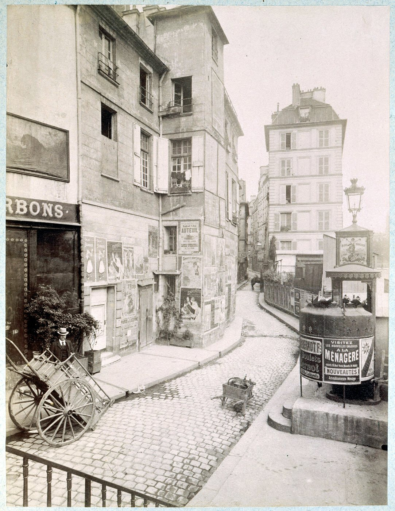
Eugène Atget, Rue des Ursins, Paris 4e, vers 1900, tirage sur papier albuminé, musée Carnavalet. Benjamin compare ces rues désertes au lieu d'un crime que l'on photographie pour l'enquête : on y cherche l'indice. Domaine public (CC0, Paris Musées), Wikimedia Commons. Voir la fiche.
Point d'arrêt. À la 32e minute, si la comparaison Malraux et Benjamin a débordé : le paragraphe argumenté devient le travail à la maison et l'on passe à l'issue de secours.
Issue de secours · 8 min. Si le temps manque à ce point d'arrêt, on condense en 8 minutes : on dicte la trace écrite courte ci-dessous ; chaque élève dit un détail de la photographie d'Atget qui fait penser à une enquête, en version rapide, pour que chacun ait parlé au moins une fois ; le travail pour la séance suivante est écrit au tableau.
Trace écrite. Benjamin et Malraux font le même constat : la reproduction arrache l'œuvre à son lieu. Benjamin y voit un dépérissement de l'aura et une désacralisation ; Malraux, une résurrection et un transfert du sacré vers l'art lui-même. Atget : la photographie devient une pièce à conviction.
Participation. Chacun parle au moins une fois : chaque élève dit un détail de la photographie d'Atget qui fait penser à une enquête.
Travail pour la séance suivante. Finir le paragraphe argumenté. Apporter une photographie de famille ancienne (ou s'en souvenir précisément) sans la montrer. Bristols : « Atget, rue des Ursins » et « Benjamin et Malraux : même constat ».
Séance 10. Barthes (1) : studium et punctum
Durée : 52 minutes (séance de 55 minutes) · Objectif : distinguer studium et punctum et les appliquer à une photographie.
Étape 1. Entrée : un mot devant Lewis Payne (7 min, minute 0 à 7)
Projeter le portrait de Lewis Payne sans rien dire. Chaque élève dit un mot. Puis donner l'histoire : le jeune homme vient de tenter un assassinat, il attend son exécution.
Étape 2. Les définitions (13 min, minute 7 à 20)
« Le punctum d'une photo, c'est ce hasard qui, en elle, me point (mais aussi me meurtrit, me poigne). » Roland Barthes, La Chambre claire, Cahiers du cinéma, Gallimard, Seuil, 1980, fragment 10.
Le studium est l'intérêt culturel, général, qu'on porte à une image : on la comprend, on la situe. Le punctum est un détail qui atteint le spectateur, sans qu'il l'ait cherché.
Étape 3. Les photographies de Barthes (12 min, minute 20 à 32)
Portrait de famille de James Van Der Zee (1926), à regarder dans le livre (fragment 19 ; l'image est protégée) : le punctum est la ceinture et les souliers à brides d'une femme. Portrait de Lewis Payne par Alexander Gardner (1865), fragment 39 : « il est mort et il va mourir ». Le punctum devient le Temps.
Étape 4. Exercice : écrire son studium et son punctum (15 min, minute 32 à 47)
Six lignes sur la photographie d'Atget ou sur celle de Gardner : trois lignes de studium (ce que je sais, ce que je situe), trois lignes de punctum (le détail qui me point, et pourquoi). Lire quatre copies. Correction : une bonne réponse distingue nettement les deux registres ; le punctum ne se justifie pas par une connaissance mais par un effet, ce qui n'empêche pas de l'analyser.
Étape 5. Trace écrite et travail (5 min, minute 47 à 52)
Dicter, écrire le travail au tableau.
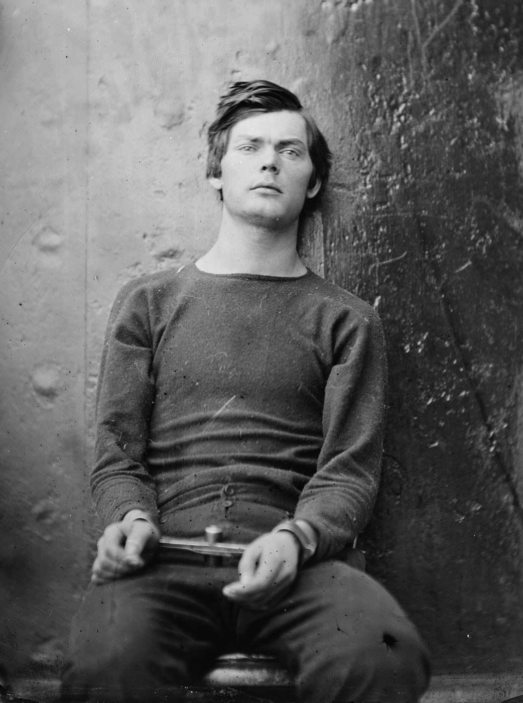
Alexander Gardner, Portrait de Lewis Payne (Lewis Powell), avril 1865, Library of Congress. Payne a tenté d'assassiner le secrétaire d'État Seward ; il est pendu en juillet 1865. Barthes : « il est mort et il va mourir ». Domaine public, Wikimedia Commons. Voir la fiche.
Point d'arrêt. À la 32e minute, si l'exercice ne peut pas être lu en classe : on le ramasse et l'on passe à l'issue de secours.
Issue de secours · 8 min. Si le temps manque à ce point d'arrêt, on condense en 8 minutes : on dicte la trace écrite courte ci-dessous ; chaque élève dit un mot devant le portrait de Lewis Payne, en version rapide, pour que chacun ait parlé au moins une fois ; le travail pour la séance suivante est écrit au tableau.
Trace écrite. Barthes distingue le studium, intérêt culturel et général porté à une photographie, et le punctum, détail qui « point » le spectateur sans qu'il l'ait cherché. Devant le portrait de Lewis Payne (Gardner, 1865), le punctum devient le Temps : « il est mort et il va mourir ».
Participation. Chacun parle au moins une fois : chaque élève dit un mot devant le portrait de Lewis Payne.
Travail pour la séance suivante. Écrire dix lignes sur sa photographie de famille, sans la montrer : son studium, son punctum. Bristols : « Studium », « Punctum », « Gardner, Lewis Payne, 1865 ».
Séance 11. Barthes (2) : le ça-a-été et le dialogue des quatre
Durée : 52 minutes (séance de 55 minutes) · Objectif : comprendre le « ça-a-été » et faire dialoguer les quatre auteurs dans le tableau de synthèse.
Étape 1. Reprise : trois textes lus (6 min, minute 0 à 6)
Trois élèves lisent leur texte sur la photographie de famille. On ne voit pas l'image : c'est exactement le dispositif de Barthes.
Étape 2. Le Jardin d'Hiver (12 min, minute 6 à 18)
Fragments 28 à 32. Barthes ne reproduit pas la photographie de sa mère enfant. Pour un autre, elle ne serait que studium. Analyser ce choix : l'image la plus importante du livre est absente. Le « ça-a-été » : la photographie atteste que la chose a été là devant l'objectif. Elle n'est donc pas d'abord une reproduction d'œuvre, comme chez Malraux et Benjamin.
Étape 3. Le dialogue avec les trois autres auteurs (14 min, minute 18 à 32)
Avec Gombrich : le studium ressemble à la part du spectateur cultivé. Le punctum en est l'excès : ce qui échappe au code.
Avec Benjamin : le punctum retrouve une forme d'unicité, mais privée, et dans une image reproductible.
Avec Malraux : Malraux voit dans la photographie un instrument au service de l'art universel. Barthes y voit le lieu d'une relation intime et mortelle au passé.
Étape 4. Compléter le tableau de synthèse (15 min, minute 32 à 47)
Étape 5. Trace écrite et travail (5 min, minute 47 à 52)
Dicter, écrire le travail au tableau.
Point d'arrêt. À la 32e minute, si le dialogue des auteurs a pris du retard : le tableau se finit à la maison et l'on passe à l'issue de secours.
Issue de secours · 8 min. Si le temps manque à ce point d'arrêt, on condense en 8 minutes : on dicte la trace écrite courte ci-dessous ; chaque binôme donne à voix haute une case du tableau ; chaque élève du binôme en dit la moitié, en version rapide, pour que chacun ait parlé au moins une fois ; le travail pour la séance suivante est écrit au tableau.
Trace écrite. Pour Barthes, la photographie atteste que « ça a été ». Elle n'est pas d'abord une reproduction d'œuvre. Le punctum est une aura privée : il ne tient ni au culte ni au musée, mais à la blessure d'un regard singulier. Barthes répond à Benjamin (une unicité revient) et à Gombrich (le regard ne se réduit pas aux conventions).
Participation. Chacun parle au moins une fois : chaque binôme donne à voix haute une case du tableau ; chaque élève du binôme en dit la moitié.
Travail pour la séance suivante. Finir le tableau de synthèse. Relire toutes ses cartes. Bristols : « Ça-a-été » et « Jardin d'Hiver ».
Séance 12. Dissertation (1) : analyser le sujet, problématiser, bâtir le plan
Durée : 52 minutes (séance de 55 minutes) · Objectif : passer du sujet à un plan dialectique qui fait travailler les tensions entre les auteurs.
Étape 1. Le sujet et la méthode (5 min, minute 0 à 5)
Sujet : « Le musée nous apprend-il à voir les œuvres ? » Rappel des étapes : analyse des termes, présupposé, paradoxe, problématique, plan.
Étape 2. Analyse des termes (15 min, minute 5 à 20)
Chaque élève propose un sens pour l'un des mots du sujet (musée, apprendre, voir, œuvres, nous). On les note en étoile au tableau. Attendu : « apprendre » suppose une éducation du regard ; « voir » n'est pas « regarder » ; « les œuvres » pose la question de ce qui est vu, l'objet d'origine ou l'objet métamorphosé ; « nous » : quel public ?
Présupposé : le musée serait neutre. Paradoxe : il rend les œuvres visibles comme œuvres en les privant de ce qu'elles étaient. Problématique : si le musée rend les œuvres visibles comme œuvres, ne nous fait-il pas voir autre chose que ce qu'elles étaient, au point qu'apprendre à voir supposerait aussi d'apprendre à se défaire du musée ?
Étape 4. Le plan, construit ensemble (15 min, minute 32 à 47)
Construire au tableau les trois parties et leurs sous-parties (voir le corrigé argumenté). Chaque sous-partie reçoit une œuvre précise.
Étape 5. Trace écrite et travail (5 min, minute 47 à 52)
Dicter, écrire le travail au tableau.
Point d'arrêt. À la 32e minute, si la problématique n'est pas formulée : le professeur la dicte, le plan est donné à la maison à partir du corrigé, et l'on passe à l'issue de secours.
Issue de secours · 8 min. Si le temps manque à ce point d'arrêt, on condense en 8 minutes : on dicte la trace écrite courte ci-dessous ; chaque élève propose un sens pour l'un des mots du sujet, en version rapide, pour que chacun ait parlé au moins une fois ; le travail pour la séance suivante est écrit au tableau.
Trace écrite. Sujet : « Le musée nous apprend-il à voir les œuvres ? » Problématique : si le musée rend les œuvres visibles comme œuvres, ne nous fait-il pas voir autre chose que ce qu'elles étaient ? I. Le musée forme le regard en confrontant. II. Mais il fait voir des œuvres qui n'existaient pas comme telles. III. Apprendre à voir, c'est apprendre à voir le musée lui-même.
Participation. Chacun parle au moins une fois : chaque élève propose un sens pour l'un des mots du sujet.
Travail pour la séance suivante. Rédiger l'introduction complète (accroche, analyse, problématique, annonce du plan). Bristols : « Problématique : musée et regard » et « Plan en trois temps ».
Séance 13. Dissertation (2) : rédiger une sous-partie, transitions, conclusion
Durée : 52 minutes (séance de 55 minutes) · Objectif : rédiger un paragraphe de dissertation qui fait dialoguer deux auteurs autour d'une œuvre.
Étape 1. Deux introductions corrigées (8 min, minute 0 à 8)
Lire deux introductions. La classe repère les cinq temps et propose une correction par introduction.
Étape 2. Rédaction individuelle d'une sous-partie (20 min, minute 8 à 28)
Rédiger la sous-partie II.1 (la métamorphose : le crucifix devenu sculpture) ou II.2 (Benjamin et l'aura). Contrainte : une idée directrice, une œuvre décrite précisément, deux auteurs qui se répondent, une phrase de bilan. Voir le modèle de paragraphe.
Étape 3. Transitions et conclusion (10 min, minute 28 à 38)
Le professeur montre deux transitions et une conclusion modèles (voir la boîte à outils).
Étape 4. Relecture croisée (9 min, minute 38 à 47)
Échange des copies par deux, avec la grille : idée directrice claire, œuvre précise, deux auteurs en dialogue, bilan.
Étape 5. Trace écrite et tirage des sujets de colle (5 min, minute 47 à 52)
Deux élèves tirent leur sujet de colle pour la séance 15.
Point d'arrêt. À la 28e minute, si la rédaction prend plus de temps : on la finit à la maison, on garde la relecture croisée pour la reprise suivante et l'on passe à l'issue de secours.
Issue de secours · 8 min. Si le temps manque à ce point d'arrêt, on condense en 8 minutes : on dicte la trace écrite courte ci-dessous ; chaque élève lit à voix haute la phrase directrice de sa sous-partie, en version rapide, pour que chacun ait parlé au moins une fois ; le travail pour la séance suivante est écrit au tableau.
Trace écrite. Une sous-partie de dissertation : une idée directrice, une œuvre décrite précisément, deux auteurs qui se répondent, une phrase de bilan. Une transition dit ce qui est acquis, ce qui manque, et pose la question suivante.
Participation. Chacun parle au moins une fois : chaque élève lit à voix haute la phrase directrice de sa sous-partie.
Travail pour la séance suivante. Finir la sous-partie au propre. Les deux élèves tirés au sort préparent leur colle. Bristols : deux formules de transition.
Séance 14. Commentaire : Benjamin et la définition de l'aura
Durée : 52 minutes (séance de 55 minutes) · Objectif : construire un plan de commentaire et rédiger une introduction sur un texte philosophique.
Étape 1. Commentaire et explication (7 min, minute 0 à 7)
Différence avec l'explication linéaire : le commentaire suit des axes, pas le fil du texte ; il doit pourtant rendre compte de tout le passage.
Étape 2. Situer, dégager la thèse, suivre le mouvement (15 min, minute 7 à 22)
Texte : la section sur l'aura (définition, puis exemple de la chaîne de montagnes à l'horizon), environ une page, à photocopier dans l'édition Folio. Situer : 1935 à 1939, exil, Institut de recherche sociale. Thèse, mouvement, chaque concept expliqué par un exemple.
Étape 3. Le plan de commentaire (15 min, minute 22 à 37)
Une définition par l'expérience : l'aura, distance vécue, et non une qualité de l'objet.
Pourquoi elle dépérit : le désir des masses de rapprocher les choses et de les posséder en reproduction.
Portée et limites : constat historique ou nostalgie ? Malraux et l'expérience des musées montrent que la reproduction peut aussi entretenir le désir de l'original.
Étape 4. Rédiger l'introduction par deux (10 min, minute 37 à 47)
Étape 5. Trace écrite et travail (5 min, minute 47 à 52)
Dicter, écrire le travail au tableau.
Point d'arrêt. À la 37e minute, si le plan a pris du temps : l'introduction se rédige à la maison et l'on passe à l'issue de secours.
Issue de secours · 8 min. Si le temps manque à ce point d'arrêt, on condense en 8 minutes : on dicte la trace écrite courte ci-dessous ; chaque élève dit à voix haute un mot clé du texte et ce qu'il désigne, en version rapide, pour que chacun ait parlé au moins une fois ; le travail pour la séance suivante est écrit au tableau.
Trace écrite. Commentaire de Benjamin. 1. L'aura est une distance vécue, non une qualité de l'objet. 2. Elle dépérit parce que les masses veulent rapprocher les choses et les posséder en reproduction. 3. Constat historique ou nostalgie ? La reproduction peut aussi entretenir le désir de l'original.
Participation. Chacun parle au moins une fois : chaque élève dit à voix haute un mot clé du texte et ce qu'il désigne.
Travail pour la séance suivante. Rédiger l'introduction du commentaire. Les deux élèves de colle finissent leur préparation. Bristol : « Méthode du commentaire ».
Séance 15. Colle blanche devant la classe
Durée : 52 minutes (séance de 55 minutes) · Objectif : s'entraîner à l'oral de prépa : exposer, tenir le temps, accepter l'objection.
Étape 1. Attentes et grille d'écoute (4 min, minute 0 à 4)
Rappeler ce que le colleur attend (voir l'oral façon colle). Distribuer la grille d'écoute.
Étape 2. Colle 1 : exposé de 10 minutes, entretien de 8 minutes (18 min, minute 4 à 22)
Le professeur joue le colleur. La classe remplit la grille.
Étape 3. Colle 2 : exposé de 10 minutes, entretien de 8 minutes (18 min, minute 22 à 40)
Même dispositif.
Étape 4. Retour de la classe (7 min, minute 40 à 47)
Chaque élève dit une phrase : un point fort ou un conseil, pour l'un des deux collés.
Étape 5. Les sujets d'exposé (5 min, minute 47 à 52)
Présenter la liste des œuvres et la consigne de l'exposé noté. Chacun choisit son œuvre.
Point d'arrêt. À la 40e minute, si la seconde colle a commencé en retard : on raccourcit son entretien à 4 minutes, puis issue de secours.
Issue de secours · 8 min. Si le temps manque à ce point d'arrêt, on condense en 8 minutes : on dicte la trace écrite courte ci-dessous ; chaque élève donne à voix haute un point fort ou un conseil pour l'un des deux collés, en version rapide, pour que chacun ait parlé au moins une fois ; le travail pour la séance suivante est écrit au tableau.
Trace écrite. Une colle réussie : une introduction qui problématise la citation au lieu de la paraphraser, un plan annoncé et tenu, au moins deux œuvres précises décrites correctement, et pendant l'entretien, accepter l'objection et rectifier.
Participation. Chacun parle au moins une fois : chaque élève donne à voix haute un point fort ou un conseil pour l'un des deux collés.
Travail pour la séance suivante. Choisir son œuvre d'exposé et commencer la fiche de description. Réviser ses bristols en trois boîtes.
Séances d'exposés · Évaluation sommative
Durée : 52 minutes par séance · Deux exposés par séance. Prévoir autant de séances que la moitié de l'effectif, ou faire passer une partie des exposés en colle hors de la classe, comme en prépa.
Étape 1. Installation et rappel de la grille (4 min, minute 0 à 4)
Les deux exposants installent leur image. La classe a la grille sous les yeux.
Étape 2. Exposé 1 et questions (20 min, minute 4 à 24)
15 minutes d'exposé, 5 minutes de questions du professeur.
Étape 3. Exposé 2 et questions (20 min, minute 24 à 44)
Même dispositif.
Étape 4. Questions de la classe, trace et consigne (8 min, minute 44 à 52)
Chaque élève pose une question ou fait une remarque en une phrase.
Point d'arrêt. À la 44e minute, quoi qu'il arrive, on arrête le second exposé.
Issue de secours · 8 min. Si un exposé déborde : on dicte les trois éléments de chaque exposé (œuvre, deux auteurs, problématique), chacun pose sa question en une phrase, le travail est écrit au tableau.
Trace écrite. Pour chaque exposé : l'œuvre, les deux auteurs mobilisés, la problématique.
Participation. Chacun parle au moins une fois : une question ou une remarque pour l'un des deux exposants.
Travail pour la séance suivante. Mettre au propre la fiche de l'un des deux exposés ; réviser ses bristols.
Les concepts, chacun attaché à une œuvre
Chaque concept se retient avec une image. C'est aussi le contenu des bristols : le concept au recto, la définition, l'œuvre et l'auteur au verso.
Musée imaginaire (Malraux)
L'ensemble des œuvres de toutes les civilisations rendu disponible à l'esprit par la reproduction photographique. Il prolonge et dépasse le musée réel.
Œuvre : les fresques de la chapelle Sixtine, que personne ne peut accrocher au Louvre mais que tout le monde peut comparer, en reproduction, à une statue khmère.
Michel-Ange, voûte de la chapelle Sixtine, 1508 à 1512, fresque, Vatican. Aucun musée ne peut l'accrocher. Photo : Jörg Bittner Unna, CC BY 3.0, Wikimedia Commons. Voir la fiche.
Métamorphose (Malraux)
La transformation du sens d'une œuvre quand elle passe d'une fonction (culte, pouvoir) à une contemplation esthétique.
Œuvre : la Maestà de Cimabue, image de dévotion devenue tableau.
Cimabue, Maestà, vers 1280, tempera sur bois, 427 × 280 cm, musée du Louvre. Peinte pour l'église San Francesco de Pise, entrée au Louvre en 1813. C'est la « Madone de Cimabue » de la première phrase de Malraux : une image de dévotion devenue tableau. Domaine public, Wikimedia Commons. Voir la fiche.
Arts fictifs (Malraux)
Les œuvres que la photographie fabrique par le cadrage, l'agrandissement et l'éclairage : un détail devient une œuvre qui n'a jamais existé à cette échelle.
Œuvre : une monnaie gauloise agrandie, comme le statère de Vercingétorix.
Statère d'or arverne au nom de Vercingétorix, vers 52 avant J.-C., Cabinet des médailles, Bibliothèque nationale de France. La pièce mesure environ 2 cm. Agrandie sur l'écran, elle devient une sculpture monumentale : c'est ce que Malraux appelle un « art fictif ». Photo : Marie-Lan Nguyen, domaine public, Wikimedia Commons. Voir la fiche.
Part du spectateur (Gombrich)
Ce que le regardeur ajoute à l'image par ses attentes, sa mémoire et ses conventions.
Œuvre : la figure du canard-lapin ; les taches d'un paysage impressionniste qui ne deviennent arbres que grâce à nous.
« Kaninchen und Ente » (« Lapin et canard »), Fliegende Blätter, Munich, 23 octobre 1892. Gombrich ouvre L'Art et l'Illusion sur cette figure : on voit le canard ou le lapin, jamais les deux à la fois. Domaine public, Wikimedia Commons. Voir la fiche.
Schéma et correction (Gombrich)
L'artiste part d'une formule apprise, puis la modifie au contact du réel. Les styles sont des histoires de corrections.
Œuvre : le Rhinocéros de Dürer (1515).
Albrecht Dürer, Le Rhinocéros, 1515, gravure sur bois, National Gallery of Art, Washington. Dürer n'a jamais vu l'animal : il travaille d'après une lettre et un croquis venus de Lisbonne. Domaine public (CC0, National Gallery of Art), Wikimedia Commons. Voir la fiche.
Peindre ce qu'on sait (Gombrich)
Le peintre égyptien ne montre pas ce que l'œil voit d'un seul point, mais ce qu'il sait de chaque chose, sous son aspect le plus clair : le bassin de haut, les poissons de profil. Ce n'est pas une maladresse, c'est une convention cohérente.
Œuvre : le Jardin de Nebamoun (Thèbes, vers 1350 avant notre ère), que Gombrich commente dans le chapitre 2 de l'Histoire de l'art.
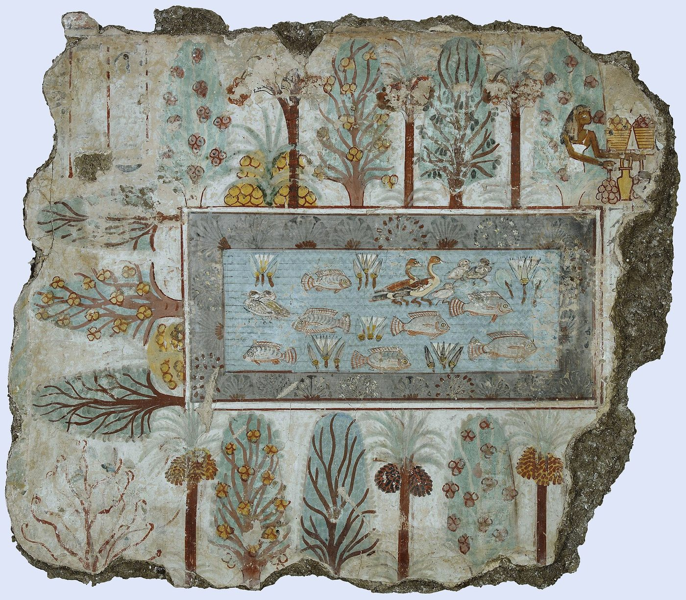
Le Jardin de Nebamoun, peinture murale de la tombe de Nebamoun, Thèbes, vers 1350 avant notre ère, British Museum. C'est l'exemple de Gombrich : le bassin est vu de haut, les poissons et les canards de profil, les arbres couchés tout autour. Le peintre montre ce qu'il sait de chaque chose, non ce qu'il voit d'un seul point. British Museum, domaine public, Wikimedia Commons. Voir la fiche.
Aura (Benjamin)
L'unicité de l'œuvre liée à sa présence, à une distance que rien ne peut abolir. La reproduction la fait dépérir.
Œuvre : un paysage de montagne au loin, exemple de Benjamin ; une icône voilée. Et son paradoxe : la Joconde, image partout reproduite, devant laquelle on fait pourtant la queue.
Léonard de Vinci, La Joconde, vers 1503 à 1519, huile sur bois, 77 × 53 cm, musée du Louvre. L'image la plus reproduite au monde, et pourtant des millions de visiteurs font la queue pour l'original. Domaine public, Wikimedia Commons. Voir la fiche.
Valeur cultuelle et valeur d'exposition (Benjamin)
La première tient à l'existence de l'œuvre dans un rite, la seconde au fait qu'elle est montrée. L'histoire de l'art passe de l'une à l'autre.
Œuvre : les statues de cathédrale invisibles du sol, opposées aux rues d'Atget.
Deux rois de la galerie des rois de la cathédrale de Reims, fin du Moyen Âge, déposés dans la tour nord. Sculptés pour le sommet de la façade, où l'œil ne distingue presque rien, on les regarde aujourd'hui les yeux dans les yeux. Photo : Gérald Garitan, CC BY-SA 3.0, Wikimedia Commons. Voir la fiche.
Studium (Barthes)
L'intérêt culturel et général porté à une photographie.
Œuvre : les photographies du Nicaragua de Koen Wessing, que Barthes cite pour leur intérêt documentaire. Ces photographies sont protégées : les regarder dans La Chambre claire.
Punctum (Barthes)
Le détail, puis le Temps, qui « point » le spectateur.
Œuvre : le portrait de Lewis Payne par Gardner (1865).
Alexander Gardner, Portrait de Lewis Payne (Lewis Powell), avril 1865, Library of Congress. Payne a tenté d'assassiner le secrétaire d'État Seward ; il est pendu en juillet 1865. Barthes : « il est mort et il va mourir ». Domaine public, Wikimedia Commons. Voir la fiche.
Ça-a-été (Barthes)
Ce que toute photographie atteste : la chose a été là, devant l'objectif. La photographie est une trace avant d'être une image.
Œuvre : la photographie du Jardin d'Hiver, que Barthes décrit et ne montre pas.
Style (Merleau-Ponty)
Une manière de percevoir et de toucher le monde, qui se forme dans le geste du peintre, et non une volonté séparée du monde.
Œuvre : le film qui montre Matisse au ralenti, hésitant puis posant le trait.
Les exercices de prépa et leurs corrigés
Exercice 1. Vrai ou faux, en justifiant
Pour Malraux, le musée restitue aux œuvres leur sens d'origine.
Pour Gombrich, l'artiste copie d'abord la nature, puis invente des conventions.
Benjamin pense que la reproduction fait dépérir l'aura.
Pour Barthes, la photographie est d'abord un moyen de reproduire les œuvres d'art.
Merleau-Ponty reprend le titre de Malraux pour l'approuver.
Le Rhinocéros de Dürer est gravé d'après nature.
Le punctum est un intérêt cultivé et général pour une image.
La valeur d'exposition l'emporte quand une œuvre entre au musée.
Malraux et Gombrich s'accordent sur un point : on devient artiste à partir des œuvres.
L'emprunt de Malraux à Benjamin est démontré.
Corrigé. 1. Faux : il décrit une métamorphose, les œuvres prennent un sens second. 2. Faux : « making comes before matching », le schéma vient d'abord, la correction ensuite. 3. Vrai. 4. Faux : elle atteste que « ça a été », elle est une trace. 5. Faux : il le reprend pour le critiquer. 6. Faux : d'après une description et un croquis. 7. Faux : c'est le studium ; le punctum est le détail qui point. 8. Vrai. 9. Vrai : ils divergent ensuite sur la suite (correction ou rupture). 10. Faux : il vaut mieux parler de problématique commune.
Exercice 2. Un concept, une œuvre
Associer chaque concept à l'œuvre qui l'illustre le mieux, puis justifier en une phrase.
Concepts
Œuvres
1. Métamorphose
a. Atget, Rue des Ursins
2. Arts fictifs
b. Dürer, Rhinocéros
3. Schéma et correction
c. Jardin de Nebamoun
4. Peindre ce qu'on sait
d. Cimabue, Maestà
5. Part du spectateur
e. Statère de Vercingétorix agrandi
6. Valeur d'exposition
f. Monet, Impression, soleil levant
7. Punctum
g. Gardner, Lewis Payne
8. Valeur cultuelle
h. Rois de la galerie de Reims, à leur place d'origine
Corrigé. 1d, 2e, 3b, 4c, 5f, 6a, 7g, 8h. Les justifications reprennent la trace écrite de chaque séance. On accepte 5b (le public a « vu » un rhinocéros dans la gravure) si l'élève le justifie.
Exercice 3. Qui pourrait dire cela ?
Attribuer chaque phrase (reformulée) à Malraux, Gombrich, Benjamin, Barthes ou Merleau-Ponty.
« Les œuvres de civilisations mortes nous parlent encore, et c'est cela qu'il faut comprendre. »
« Un style répond à des problèmes précis, posés dans un atelier. »
« Les masses veulent rapprocher les choses d'elles. »
« Je ne montre pas cette photographie : vous n'y verriez rien. »
« Le peintre ne choisit pas son style contre le monde ; il le trouve en regardant. »
« Le musée isole et confronte. »
« On ne peut pas voir à la fois le canard et le lapin. »
« La photographie est une pièce à conviction. »
« L'art est ce qui répond à la mort et au temps. »
« On ne peut pas voir la ressemblance sans un schéma préalable. »
« Une photographie atteste que la chose a été là. »
« L'œuvre ne valait d'abord que par sa présence dans un rite. »
Corrigé. a. Malraux. b. Gombrich. c. Benjamin. d. Barthes (le Jardin d'Hiver). e. Merleau-Ponty. f. Malraux. g. Gombrich. h. Benjamin (Atget). i. Malraux (l'anti-destin). j. Gombrich (schéma et correction). k. Barthes (le ça-a-été). l. Benjamin (la valeur cultuelle).
Exercice 4. Corriger les contresens
Chaque phrase d'élève contient une erreur. La réécrire juste.
« Pour Malraux, le musée détruit les œuvres. »
« Gombrich pense que les Égyptiens ne savaient pas dessiner. »
« Benjamin regrette l'aura et condamne la photographie. »
« Le punctum est ce que tout le monde remarque dans une photo. »
« Malraux a copié sa théorie sur Benjamin. »
« Le Rhinocéros de Dürer est faux parce que Dürer était un mauvais observateur. »
Corrigé.
Le musée ne détruit pas : il métamorphose ; l'œuvre acquiert une seconde nature.
Ils peignaient ce qu'ils savaient de chaque chose, selon des conventions cohérentes : ce n'est pas une maladresse.
Benjamin constate le dépérissement de l'aura ; il y voit aussi une chance politique (l'appropriation par les masses) et un danger (l'esthétisation de la politique).
Le punctum est singulier : il me point, moi, et peut laisser un autre indifférent.
L'emprunt n'est pas démontré : on parle d'une problématique commune, avec des conclusions opposées.
Dürer n'avait jamais vu l'animal ; il applique un schéma appris : c'est la loi de toute représentation selon Gombrich.
Exercice 5. Faire dialoguer au lieu de juxtaposer
Réécrire ce paragraphe d'élève pour que les auteurs se répondent :
Malraux pense que le musée métamorphose les œuvres. Benjamin pense que la reproduction détruit l'aura. Barthes parle du punctum. Ces trois auteurs ont des idées intéressantes sur l'art.
Corrigé possible. Malraux et Benjamin partent du même constat : en quittant l'église pour le musée, puis le musée pour la page, l'œuvre perd son lieu. Mais là où Benjamin voit dépérir l'aura, Malraux voit naître une seconde vie, la métamorphose qui fait du crucifix roman une sculpture. Barthes déplace le débat : devant le portrait de Lewis Payne, ce n'est plus l'œuvre qui a une aura, c'est le regard singulier qui est blessé, si bien qu'une forme d'unicité revient au cœur de l'image reproductible. On passe ainsi d'une question sur l'objet à une question sur le spectateur.
Ce qui a changé : un constat commun, un connecteur d'opposition (« mais là où »), une œuvre précise par auteur, un bilan qui fait avancer la réflexion.
Exercice 6. Une image, deux auteurs
En cinq lignes, lire la photographie de la foule devant La Joconde (séance 8) avec Benjamin, puis avec Barthes.
Proposition de corrigé. Pour Benjamin, la scène montre le triomphe de la valeur d'exposition : l'œuvre n'est plus présente, elle est montrée, et chacun repart avec sa reproduction. Mais Barthes permet de compliquer ce constat : ce que chaque visiteur photographie, c'est aussi la preuve qu'il a été là, devant l'original. Chaque image prise est un petit « ça-a-été » privé, qui ne se confond pas avec la reproduction de l'œuvre.
Exercice 7. Dissertation sur un sujet ouvert
Sujet : « Le musée nous apprend-il à voir les œuvres ? »
Consignes : 4 heures. Introduction complète, trois parties, au moins trois œuvres précises et les quatre auteurs mobilisés.
Corrigé argumenté
Analyse du sujet. « Apprendre » suppose une éducation du regard ; « voir » n'est pas « regarder » ; « les œuvres » pose la question de ce qui est vu (l'objet d'origine ou l'objet métamorphosé). Le présupposé à discuter : le musée serait neutre.
Problématique. Si le musée rend les œuvres visibles comme œuvres, ne nous fait-il pas voir autre chose que ce qu'elles étaient, au point qu'apprendre à voir supposerait aussi d'apprendre à se défaire du musée ?
I. Oui : le musée forme le regard en confrontant les œuvres.
Malraux : la confrontation fait apparaître les styles. On voit Cimabue parce qu'on le compare à Giotto.
Gombrich : on ne voit qu'à travers des schémas appris ; le musée est l'atelier du spectateur.
Exemple : la salle des primitifs italiens au Louvre.
II. Mais le musée fait voir des œuvres qui n'existaient pas comme telles.
Métamorphose : le crucifix devenu sculpture.
Benjamin : perte de la valeur cultuelle, perte de l'aura ; la reproduction aggrave ce mouvement.
Gombrich contre Malraux : le risque d'anachronisme, voir le passé avec nos yeux modernes.
Exemple : les « arts fictifs », détails agrandis par la photographie.
III. Apprendre à voir, c'est apprendre à voir le musée lui-même.
Conscience historique : restituer la fonction (Panofsky, iconologie), sans renoncer à la métamorphose.
Barthes : un regard singulier, le punctum, qu'aucune institution n'enseigne.
Merleau-Ponty : voir, c'est retrouver le geste du peintre et non seulement l'objet exposé.
Conclusion. Le musée apprend à voir l'art, mais pas toujours les œuvres. Il est une école du regard à condition d'être pensé comme une métamorphose et non comme une vitrine neutre.
Introduction rédigée (modèle)
Au Louvre, la Maestà de Cimabue est éclairée, étiquetée, placée à côté d'autres Vierges : jamais elle n'a été si bien visible. Pourtant, ceux pour qui elle fut peinte ne la « voyaient » pas ainsi : ils priaient devant elle, à la lumière des cierges. Le musée nous apprend-il donc à voir les œuvres ? Apprendre suppose une éducation du regard, que le musée semble offrir en rassemblant et en comparant ; mais voir n'est pas seulement regarder, et ce que nous voyons au musée est-il encore l'œuvre, ou un objet que le musée a transformé ? Si le musée rend les œuvres visibles comme œuvres, ne nous fait-il pas voir autre chose que ce qu'elles étaient, au point qu'apprendre à voir supposerait aussi d'apprendre à se défaire du musée ? Nous verrons d'abord que le musée forme le regard en confrontant les œuvres, puis qu'il fait voir des œuvres qui n'existaient pas comme telles, avant de montrer qu'apprendre à voir, c'est apprendre à voir le musée lui-même.
Autres sujets, avec un plan modèle
1. « Une œuvre reproduite est-elle encore la même œuvre ? »
Problématique. Si la reproduction transmet l'image, transmet-elle l'œuvre, ou en fabrique-t-elle une autre ?
I. Oui : la forme se transmet. La reproduction rend l'œuvre connaissable et comparable (Malraux, musée imaginaire ; Gombrich, voir reste interpréter, original ou non). II. Non : l'original a un « ici et maintenant » que la copie perd (Benjamin, aura) ; elle perd aussi l'échelle et la matière ; la photographie crée même des « arts fictifs » (le statère agrandi) ; l'Athéna de Phidias ne survit que par des copies réduites. III. La reproduction n'est ni la même œuvre ni une autre : elle est un moment de sa vie, de sa métamorphose, et elle entretient le désir de l'original (la Joconde et sa foule) ; la photographie, chez Barthes, n'est d'ailleurs pas une reproduction mais une trace.
Œuvres : Athéna du Varvakeion, statère de Vercingétorix, La Joconde et sa foule.
2. « L'art a-t-il une histoire ? »
Problématique. Peut-on raconter l'art comme une suite de progrès, si les œuvres du passé nous parlent encore comme si elles étaient d'aujourd'hui ?
I. Une histoire de problèmes et de solutions : schéma et correction, des Égyptiens à Constable, Giotto après Cimabue (Gombrich). II. Mais les œuvres échappent à leur temps : l'anti-destin, la survie et la métamorphose, la « monnaie de l'absolu » (Malraux) ; un crucifix roman nous touche sans que nous partagions sa foi. III. L'histoire de l'art est aussi celle des regards : fonctions, musées et reproductions changent ce que nous voyons ; valeur cultuelle puis valeur d'exposition (Benjamin), regard singulier (Barthes).
Œuvres : Jardin de Nebamoun, Rhinocéros de Dürer, Christ Courajod.
3. « Faut-il connaître pour voir ? »
Problématique. Si l'on ne voit qu'à travers ce que l'on sait, le savoir n'empêche-t-il pas aussi de voir ?
I. Oui : voir, c'est interpréter ; sans schéma, rien n'apparaît (canard-lapin, Monet, Constable chez Gombrich ; le peintre égyptien peint ce qu'il sait ; Panofsky, l'iconologie). II. Mais le savoir peut aveugler : Dürer voit une armure parce qu'il la connaît ; Malraux voit le passé avec le goût moderne (le reproche de Gombrich) ; le studium sans le punctum, le musée qui étiquette. III. Il faut connaître pour voir, puis savoir se laisser surprendre : le punctum échappe au studium (Barthes) ; voir, c'est retrouver le geste du peintre (Merleau-Ponty).
Œuvres : canard-lapin, Rhinocéros de Dürer, Lewis Payne.
Exercice 8. Rédiger une sous-partie (modèle de paragraphe)
Sous-partie II.1 de la dissertation : la métamorphose.
Modèle. Le musée ne se contente pas de montrer : il transforme ce qu'il montre. Le Christ Courajod, au Louvre, est présenté comme une sculpture bourguignonne du XIIe siècle ; on admire la ligne des bras, le drapé du pagne, la tête inclinée. Mais ce Christ appartenait à une Descente de croix d'église, il était vu de loin, dans un rite, par des fidèles qui ne cherchaient pas un style. C'est ce que Malraux nomme la métamorphose : « un crucifix roman n'était pas d'abord une sculpture ». Benjamin aurait vu là une perte, le passage de la valeur cultuelle à la valeur d'exposition. Malraux y voit au contraire la naissance d'une seconde vie. Dans les deux cas, ce que le musée nous apprend à voir n'est pas l'objet d'origine : c'est une œuvre d'art que le musée a fabriquée.
Structure : idée directrice ; œuvre décrite ; citation courte ; deux auteurs qui se répondent ; bilan qui reprend le sujet.
Exercice 9. Commentaire d'extrait
Texte : Benjamin, « L'œuvre d'art à l'époque de sa reproductibilité technique », section sur l'aura (définition, puis exemple de la chaîne de montagnes à l'horizon). Environ une page, à photocopier dans l'édition Folio (Œuvres III, p. 269 à 316).
Méthode attendue : situer le texte (1935-1939, exil, Institut de recherche sociale), dégager la thèse, suivre le mouvement, expliquer chaque concept par un exemple, puis discuter en confrontant à Malraux.
Questions pour guider la préparation :
Pourquoi Benjamin passe-t-il par un exemple naturel (la montagne) pour définir une notion qui concerne l'art ?
Quels mots du texte disent la distance ? Quels mots disent le rapprochement ?
Qui sont « les masses » dans le texte, et que désirent-elles ?
Le texte est-il un regret ? Relever ce qui est constat et ce qui est jugement.
En quoi Malraux, quinze ans plus tard, donne-t-il une autre conclusion au même constat ?
Barème indicatif sur 20 : introduction et situation /3 ; compréhension de la thèse et des concepts /5 ; analyse précise du texte, citations courtes commentées /6 ; discussion avec Malraux /4 ; expression /2.
Éléments de réponse aux questions
L'exemple naturel montre que l'aura est une expérience de perception (une distance vécue) avant d'être une propriété de l'œuvre ; il rend la notion sensible.
Le public moderne des villes, de la presse illustrée et du cinéma : il veut rapprocher les choses de lui et les posséder en image.
Le constat domine (un dépérissement historique) ; le jugement reste partagé : perte d'une expérience, mais chance politique d'une appropriation collective, et danger de l'esthétisation de la politique.
Même constat (l'œuvre arrachée à son lieu), conclusion opposée : Malraux voit une résurrection et un transfert du sacré vers l'art lui-même.
Plan de commentaire
Une définition par l'expérience : l'aura, distance vécue, et non une qualité de l'objet.
Pourquoi elle dépérit : le désir des masses de rapprocher les choses et de les posséder en reproduction.
Portée et limites : constat historique ou nostalgie ? Malraux et l'expérience des musées montrent que la reproduction peut aussi entretenir le désir de l'original.
Introduction rédigée (modèle)
Écrit en exil à Paris entre 1935 et 1939, pour l'Institut de recherche sociale, l'essai de Walter Benjamin part d'un fait technique : la photographie et le cinéma permettent de reproduire les œuvres en masse. Le passage étudié en tire la notion la plus célèbre de l'essai, l'aura, qu'il définit d'abord par une expérience, celle d'une chaîne de montagnes à l'horizon, avant d'expliquer pourquoi elle dépérit. On se demandera si cette définition décrit une propriété des œuvres ou une manière de les vivre, et ce que cela implique pour l'art à l'âge de la reproduction. Nous verrons que Benjamin définit l'aura par l'expérience d'une distance, qu'il explique son déclin par le désir de rapprocher les choses, puis nous discuterons la portée de ce constat à la lumière de Malraux.
Exercice 10. Analyse d'image pour la question de khâgne « L'atelier »
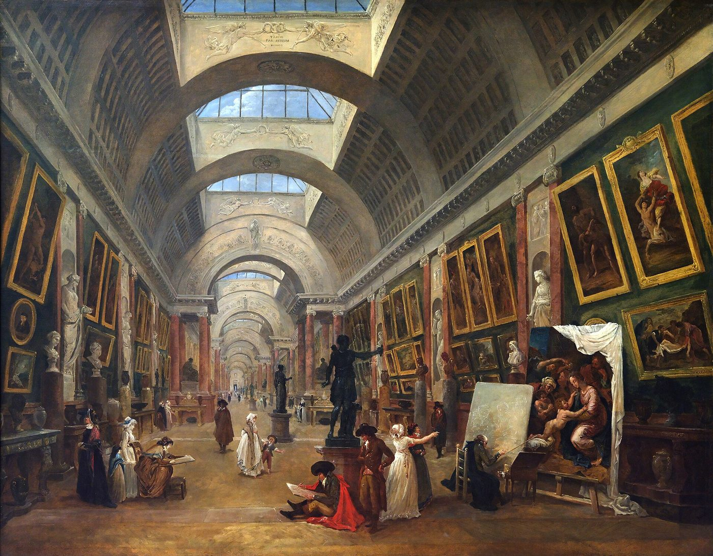
Hubert Robert, Projet pour la transformation de la Grande Galerie du Louvre, 1796, huile sur toile, musée du Louvre. Le tableau fait du musée un atelier : au premier plan, des peintres copient les maîtres. Domaine public, Wikimedia Commons. Voir la fiche.
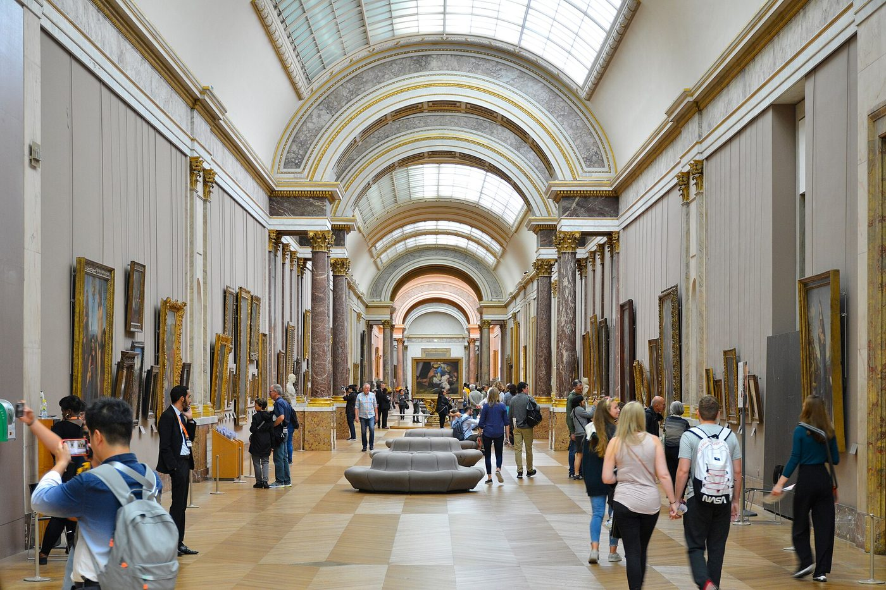
La Grande Galerie du Louvre en 2019. Photo : Cheng-en Cheng, CC BY-SA 2.0, Wikimedia Commons. Voir la fiche.
Le musée, alors et maintenant. En 1796, la Grande Galerie vient d'ouvrir au public (1793), et Hubert Robert y montre des peintres qui copient les tableaux. Aujourd'hui, les visiteurs passent devant les mêmes murs, téléphone à la main. Dans les deux cas, le musée aligne et confronte des œuvres venues d'églises et de palais.
Consigne. En 20 lignes, décrire le tableau d'Hubert Robert, puis montrer comment il illustre la formule de Malraux (« on devient peintre en regardant des tableaux ») et la théorie du schéma chez Gombrich. Travail à la maison, après la séance 5, ou entraînement pour l'option histoire et théorie des arts.
Éléments attendus.
Description : perspective profonde de la galerie, lumière zénithale, murs couverts de tableaux, statues, visiteurs ; au premier plan, un copiste à son chevalet, une jeune femme qui dessine assise, un homme qui croque.
Malraux : le peintre naît des œuvres ; le musée nouvellement ouvert devient l'école des artistes.
Gombrich : copier, c'est acquérir des schémas avant de corriger au contact du réel ; l'atelier se prolonge au musée.
Limite : le tableau est un projet, une galerie rêvée par son conservateur ; c'est déjà un « musée imaginaire ».
Comparaison avec la photographie de 2019 : les copistes ont laissé place aux visiteurs qui photographient ; le musée-atelier est devenu un musée d'exposition (Benjamin).
Exercice 11. Oral façon colle
Format : préparation 20 minutes, exposé 10 minutes, entretien 10 minutes. Le sujet est une citation ou une image, tirée au sort. En classe (séance 15), l'entretien est ramené à 8 minutes et la préparation se fait à la maison.
Sujet
Pistes pour le colleur
« L'art est un anti-destin. » (Malraux)
Problématique : l'art peut-il vaincre le temps, si les œuvres ne survivent qu'en changeant de sens ? Plan : I. la survie des œuvres (Maestà, Athéna) ; II. une survie par métamorphose, voire par anachronisme (Gombrich : l'art comme religion de substitution) ; III. un anti-destin humain plutôt que mystique. Question du colleur : « Un tableau détruit a-t-il échoué comme anti-destin ? »
« L'Art avec un grand A n'existe pas. » (Gombrich)
Problématique : si l'Art n'existe pas, que réunit le musée ? Plan : I. une histoire d'artistes et de problèmes (Nebamoun, Dürer, Constable) ; II. mais le musée fabrique la catégorie « art » (Malraux) ; III. l'art existe comme regard (Barthes). Question du colleur : « Gombrich lui-même n'écrit-il pas une Histoire de l'art ? »
Une reproduction du Rhinocéros de Dürer
Décrire d'abord (gravure sur bois, 1515, armure, corne dorsale), puis : I. le schéma et la correction ; II. la reproduction qui fixe une erreur pendant deux siècles ; III. un « art fictif » ? l'image vaut aujourd'hui comme œuvre, non comme document. Question du colleur : « Pourquoi cette image fausse est-elle belle ? »
Une photographie d'Atget, rue de Paris déserte
Décrire (rue des Ursins, vers 1900, pavés, façades, absence humaine), puis : I. la pièce à conviction (Benjamin) ; II. un document devenu œuvre de musée, qui a peut-être retrouvé une aura ; III. un « ça-a-été » (Barthes), studium et punctum. Question du colleur : « Atget se pensait-il artiste ? »
« Ça a été. » (Barthes)
Problématique : la photographie est-elle d'abord une preuve ou une image ? Plan : I. l'attestation (Lewis Payne) ; II. mais la photographie reproduit aussi les œuvres et les métamorphose (Malraux, Benjamin) ; III. le punctum, entre preuve et blessure. Question du colleur : « Une photographie retouchée a-t-elle encore été ? »
Le portrait de Lewis Payne
Le punctum devient le Temps ; « il est mort et il va mourir ». Lien avec l'anti-destin de Malraux : la photographie montre-t-elle le destin que l'art combat ?
« Un crucifix roman n'était pas d'abord une sculpture. » (Malraux)
Fonction et métamorphose ; le mot « d'abord ». Œuvre : Christ Courajod. Objection : Benjamin, la perte de la valeur cultuelle.
Deux images : Cimabue et Giotto
Voir par comparaison (Malraux) et histoire des corrections (Gombrich). Décrire précisément le trône, les corps, l'or.
« Voir, c'est interpréter. »
Le canard-lapin, Monet, Constable (Gombrich). Limite : le punctum, ce qui échappe au code (Barthes).
Le tympan de Moissac
Une œuvre restée à sa place et dans sa fonction : a-t-elle échappé au musée imaginaire ? Les photographies qui en font une image de livre.
20:00
Ce que le colleur attend
Une introduction qui problématise la citation au lieu de la paraphraser.
Un plan annoncé et tenu dans le temps.
Au moins deux œuvres précises décrites correctement.
Pendant l'entretien, accepter les objections et rectifier sans se défendre à tout prix.
Boîte à outils : phrases pour démarrer et transitions
Moment
Formules
Accroche
Au Louvre, la Maestà de Cimabue… · En 1515, Dürer grave un animal qu'il n'a jamais vu… · Barthes ne montre pas la photographie qui compte le plus pour lui…
Analyse des termes
Le verbe « apprendre » suppose… · Il faut distinguer voir et regarder… · Le sujet présuppose que…
Problématique
Si…, ne faut-il pas penser que… ? · Le paradoxe tient à ceci : … · Toute la question est de savoir si…
Faire dialoguer
Là où Benjamin voit…, Malraux voit… · Gombrich objecterait que… · Barthes déplace la question : …
Transition
Nous avons montré que… ; reste à comprendre pourquoi… · Cette réponse laisse pourtant de côté… · Si le musée forme le regard, encore faut-il savoir ce qu'il donne à voir.
Conclusion
Le musée apprend à voir l'art, mais pas toujours les œuvres. · On peut donc répondre que… à condition de… · Reste une question, que posait déjà…
Mes flashcards sur bristol · mode d'emploi
Principe : chaque élève fabrique ses cartes à la main, sur des bristols. Écrire le concept, c'est déjà l'apprendre. Le paquet reste dans son sac, il révise partout, sans écran. Il n'y a pas de paquet tout prêt : les modèles ci-dessous montrent seulement comment faire.
Matériel
Des fiches bristol format A7 (74 × 105 mm), environ 30 par élève, ou des bristols A6 coupés en deux. Des feutres de six couleurs. Un élastique ou une enveloppe pour le paquet. Une petite boîte en carton à trois compartiments pour l'entraînement (une boîte à chaussures avec deux séparations suffit). On peut aussi imprimer le modèle vierge et le découper.
Comment remplir une carte
Recto : le concept, l'œuvre ou la formule, en gros, dans la couleur de sa catégorie.
Verso : la définition en une ou deux lignes, l'auteur et le livre, une œuvre précise, et un lien avec un autre auteur.
Écrire avec ses mots. Une citation, si elle figure sur la carte, ne dépasse pas une ligne et porte sa source.
Code couleur
Catégorie
Couleur du feutre
Concepts (métamorphose, aura, punctum…)
Rouge
Auteurs et livres
Bleu
Œuvres (titre, artiste, date, lieu)
Vert
Citations courtes avec leur source
Noir
Dates et contextes
Orange
Liens et objections entre auteurs
Violet
Déroulé dans la séquence
Les cartes à fabriquer sont indiquées dans le travail de chaque séance, deux ou trois à la fois : environ 30 cartes à la fin de la séquence. Les reprises des séances 5 et 9 se font avec les cartes, par deux.
Quatre cartes modèles
Métamorphose
Transformation du sens d'une œuvre qui passe d'une fonction (culte, pouvoir) à la contemplation. Malraux, Les Voix du silence, I. Œuvre : la Maestà de Cimabue. Lien : Benjamin y voit une perte d'aura.
Dürer, Le Rhinocéros, 1515
Gravure d'un animal jamais vu, cuirassé comme une armure, copié deux siècles. Prouve, pour Gombrich, que le schéma précède l'observation : schéma et correction.
« il est mort et il va mourir »
Barthes, La Chambre claire, fragment 39, sur le portrait de Lewis Payne (Gardner, 1865). Le punctum devient le Temps.
Benjamin et Malraux
Même constat : la reproduction arrache l'œuvre à son lieu. Conclusions opposées : dépérissement de l'aura (Benjamin), résurrection et transfert du sacré (Malraux).
Entraînement par deux, en trois boîtes
A montre le recto, B répond à voix haute et donne une œuvre. Carte réussie : elle avance d'une boîte. Carte ratée : retour en boîte 1. Objectif avant la dissertation : 20 cartes en boîte 3.
Grille · mon paquet de cartes /10
Critère
Points
25 cartes ou plus, avec le code couleur respecté
/ 2
Écriture lisible, orthographe juste au recto et au verso
/ 3
Définitions personnelles et exactes, une œuvre précise par carte
/ 3
Contrôle : le professeur tire 5 cartes, l'élève répond (4 réponses justes ou plus = 2 points)
Évaluation sommative : un exposé d'histoire de l'art
Consigne : exposé individuel de 15 minutes, suivi de 5 minutes de questions. Chaque élève choisit une œuvre dans la liste et l'étudie à la lumière d'au moins deux auteurs de la séquence.
L'exposé doit comporter :
Une description précise de l'œuvre, avec le vocabulaire technique (support, technique, composition, lumière, échelle).
Le contexte d'origine : commanditaire, lieu, fonction.
Son parcours : entrée au musée, reproductions, usages actuels.
Une problématique qui fait dialoguer deux auteurs.
Liste d'œuvres
Cimabue, Maestà, vers 1280, Louvre
Dürer, Rhinocéros, 1515
Léonard, La Joconde, Louvre
Masque fang, Gabon (Musée du quai Branly)
Atget, Rue des Ursins, 1900
Gardner, Portrait de Lewis Payne, 1865
Duchamp, L.H.O.O.Q., 1919 (œuvre protégée : la montrer depuis un catalogue ou le site d'un musée)
Tympan de Moissac (vers 1130)
Une œuvre du musée d'Aquitaine ou du musée des Beaux-Arts de Bordeaux, au choix
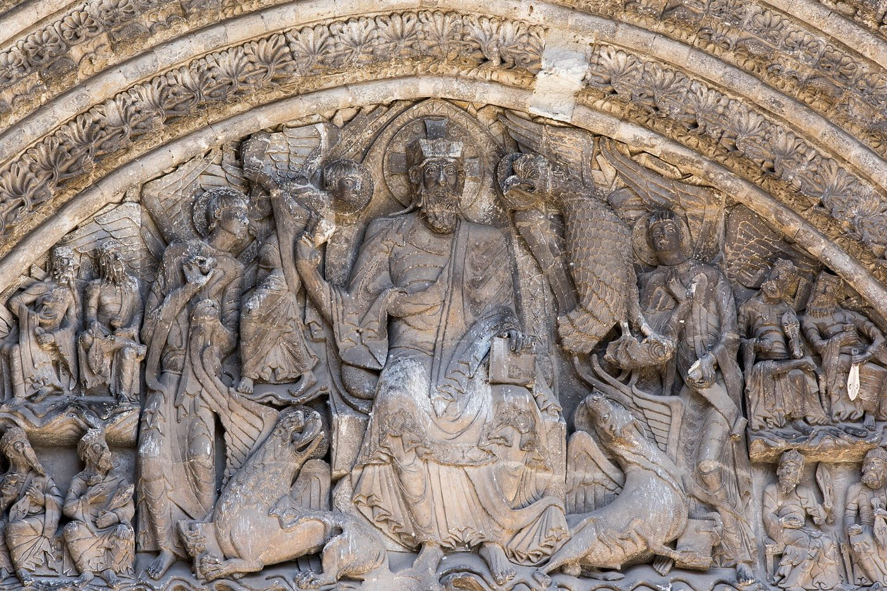
Tympan du portail sud de l'abbatiale Saint-Pierre de Moissac, vers 1130, pierre. Une œuvre restée à sa place et dans sa fonction : on y entre encore pour aller à l'église. Photo : ArtProjection, CC0, Wikimedia Commons. Voir la fiche.
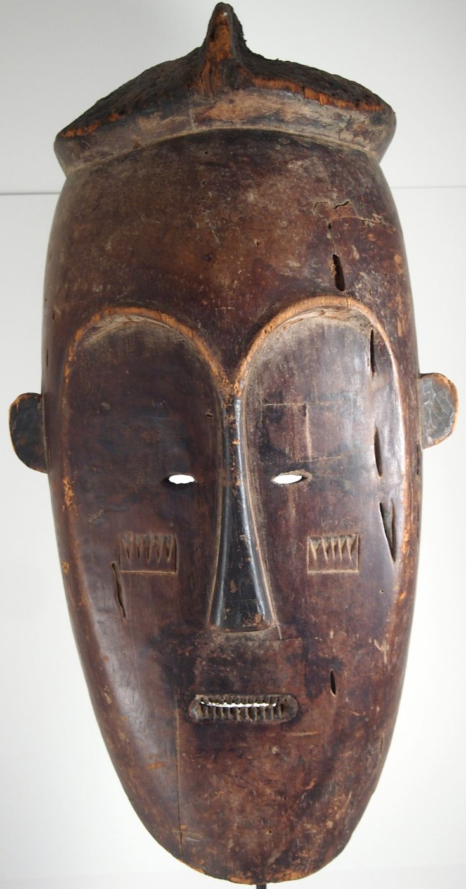
Masque fang, Gabon, bois, 46 cm (collection particulière). Objet rituel devenu, au début du XXe siècle, modèle pour les peintres de Paris et pièce de musée. Photo : Ann Porteus, CC BY 2.0, Wikimedia Commons. Voir la fiche.
Le lien entre ces images. Deux œuvres de la liste, aux deux bouts du parcours : le tympan de Moissac est resté à sa place et dans sa fonction ; le masque fang a quitté son rite pour l'atelier des peintres, puis la vitrine. Un bon exposé raconte ce trajet.
Grille de notation (sur 20)
Critère
Barème
Note
Description précise de l'œuvre, vocabulaire de l'histoire de l'art
/4
Contexte d'origine et parcours de l'œuvre
/3
Problématique et construction de l'exposé
/4
Maîtrise des concepts, dialogue entre au moins deux auteurs
/5
Expression orale, respect du temps
/2
Réponses aux questions
/2
Total : 0 / 20
Ce qui distingue un exposé à 16 d'un exposé à 10. À 10, l'œuvre est décrite, puis les auteurs sont résumés à côté, sans lien. À 16, chaque concept est appliqué à un détail précis de l'œuvre, et les deux auteurs sont mis en tension (par exemple, pour le masque fang : métamorphose chez Malraux, valeur cultuelle chez Benjamin, et le reproche d'anachronisme de Gombrich).
Autres évaluations de la séquence
Devoir surveillé de 4 heures : la dissertation « Le musée nous apprend-il à voir les œuvres ? », après la séance 13.
Devoir maison : le commentaire complet de Benjamin (exercice 9), à rendre une semaine après la séance 14.
Devoir maison facultatif : l'analyse du tableau d'Hubert Robert (exercice 10).
Le paquet de flashcards, noté sur 10 (grille dans le mode d'emploi).
Bibliographie
Œuvres étudiées
André Malraux, Les Voix du silence, Gallimard, « La Galerie de la Pléiade », 1951 ; Écrits sur l'art I, Œuvres complètes IV, Gallimard, « Bibliothèque de la Pléiade », 2004 ; Le Musée imaginaire, Gallimard, Folio essais.
Ernst Gombrich, Histoire de l'art, Phaidon (éd. de poche).
Ernst Gombrich, L'Art et l'Illusion. Psychologie de la représentation picturale, trad. Guy Durand, Gallimard, 1971 ; rééd. Phaidon.
Walter Benjamin, « L'œuvre d'art à l'époque de sa reproductibilité technique », dans Œuvres III, Gallimard, Folio essais, 2000, p. 269 à 316.
Roland Barthes, La Chambre claire. Note sur la photographie, Cahiers du cinéma / Gallimard / Seuil, 1980.
Lectures complémentaires accessibles
Erwin Panofsky, Essais d'iconologie, Gallimard, 1967 (introduction : les trois niveaux de sens) ; La Perspective comme forme symbolique, Minuit, 1975.
Maurice Merleau-Ponty, L'Œil et l'Esprit, Gallimard, Folio essais ; « Le langage indirect et les voix du silence », dans Signes, Gallimard, 1960, p. 49 à 104.
Ernst Gombrich, Meditations on a Hobby Horse, Phaidon, 1963 (recueil où figure le compte rendu de Malraux) ; trad. Guy Durand, Méditations sur un cheval de bois, Mâcon, Éditions W, 1986.
Susan Sontag, Sur la photographie, Christian Bourgois.
Francis Haskell, Le Musée éphémère. Les maîtres anciens et l'essor des expositions, Gallimard, 2002.
Krzysztof Pomian, Collectionneurs, amateurs et curieux. Paris, Venise : XVIe-XVIIIe siècle, Gallimard, 1987.
La critique sur Malraux
Ernst Gombrich, « André Malraux and the Crisis of Expressionism », The Burlington Magazine, 1954.
Georges Duthuit, Le Musée inimaginable, José Corti, 1956 : une charge d'ensemble contre Malraux.
Maurice Blanchot, « Le musée, l'art et le temps », dans L'Amitié, Gallimard, 1971.
Henri Godard, introduction et notes des Écrits sur l'art, Pléiade, 2004.
Jean-Pierre Zarader, Malraux ou la pensée de l'art, Ellipses.
Derek Allan, Art and the Human Adventure: André Malraux's Theory of Art, Rodopi, 2009.
Toutes les images viennent de Wikimedia Commons : peintures, gravures et photographies anciennes du domaine public, et photographies d'objets sous licence libre (CC0, CC BY, CC BY-SA), avec le nom de leur auteur sous chaque image. Les œuvres encore protégées (Van Der Zee, Koen Wessing, Chiang Yee, Duchamp, Matisse) ne sont pas reproduites : elles se regardent dans les livres cités.
Séquence de terminale préparant à l'hypokhâgne. Les citations sont courtes et doivent être vérifiées sur l'édition utilisée en classe.


_1515_-_BM_SL,5218.161_-01.jpg){kind=link}

_1.jpg){kind=link}


.jpg){kind=link}


.jpg){kind=link}